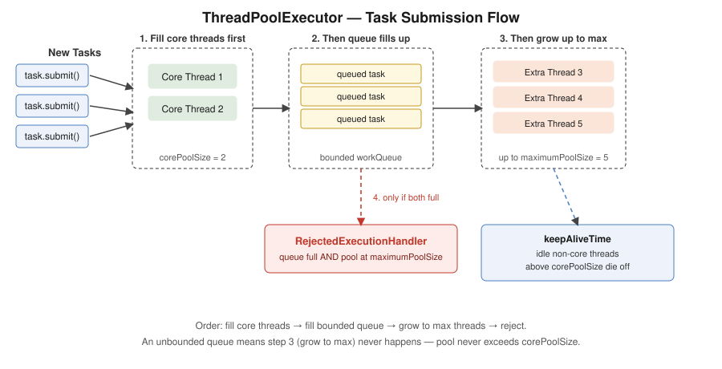
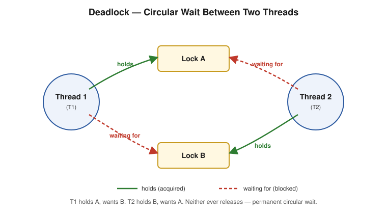
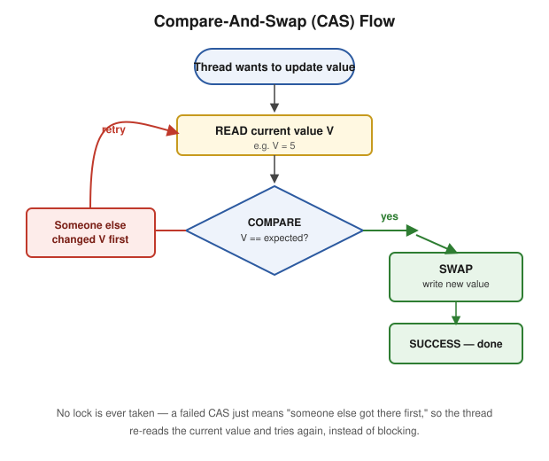
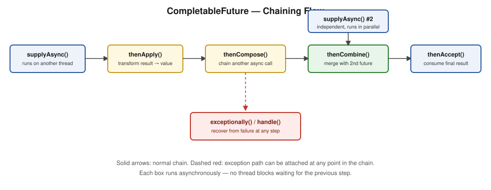

A complete, corrected, and expanded multithreading interview guide — basic fundamentals through advanced concurrency, each part with worked code examples, expected outputs, pitfalls, and interview Q&A.
| # | Part | Covers |
|---|---|---|
| 1 | Fundamentals | Program/Process/Thread, thread creation, lifecycle states, monitor lock, wait/notify, priority, daemon threads, interrupting threads |
| 2 | Executors & Thread Pools | ExecutorService, ThreadPoolExecutor internals, pool types, Callable/Future, rejection policies |
| 3 | Coordination Utilities | CountDownLatch, CyclicBarrier, Phaser, Semaphore, Exchanger, Condition, missed signals |
| 4 | Locks | synchronized vs ReentrantLock, situational lock-selection guide, ReadWriteLock, StampedLock, optimistic vs pessimistic locking, deadlock/livelock/starvation |
| 5 | Memory Model & Lock-Free | volatile, visibility vs atomicity, false sharing, CAS, ABA problem, LongAdder, JMM happens-before |
| 6 | Concurrent Collections | ConcurrentHashMap internals, CopyOnWriteArrayList, BlockingQueue variants, ThreadLocal, LRU cache design |
| 7 | Fork/Join & Parallelism | Concurrency vs parallelism, ForkJoinPool, RecursiveTask, work-stealing |
| 8 | Virtual Threads & Exceptions | Virtual vs platform threads, uncaught exception handling |
| — | CompletableFuture — Complete Guide | Basic → advanced, with a quick "which method do I need" reference table |
images/*.svg) sit one folder up from these files.Last updated: July 2026
Program → Process → Thread, thread creation, lifecycle, monitor locks, wait/notify, priority, daemon threads. Interview Q&A at the end.
What it is: three layers, each one level more granular than the last.
Program — a passive executable sitting on disk (java.exe, chrome.exe) — does nothing by itself
│ double-click / launch
▼
Process — a running instance of that program — has its own heap, open files, native resources
│ spawns
▼
Thread — the smallest unit of execution WITHIN a process
each thread: own Program Counter, own stack, own registers
all threads in a process SHARE: heap, objects, static variables
A process is an independent running program — Chrome, VS Code, Spotify are each their own process, each with its own Heap, Stack, Code, and Resources, completely isolated from one another. If Chrome crashes, VS Code and Spotify keep running, because every process has its own memory. This is called process isolation. Since processes can't directly access each other's memory, communicating between them requires IPC (Inter-Process Communication) — sockets, pipes, shared files.
A thread is a lightweight unit of execution within a process. Multiple threads in the same process share that process's memory space — no IPC needed, just shared variables (with all the synchronization concerns this guide covers).
The practical tradeoff: process isolation gives you fault containment (one process crashing doesn't take down another) at the cost of heavier context-switching and no easy shared-memory communication. Threads are cheap to create and communicate trivially, at the cost of one bad thread being able to corrupt shared state for the whole process.
⚠️ Pitfall — the exact per-thread vs per-process split: Program Counter, stack, and registers are per-thread. Heap, loaded objects, and static variables are per-process (shared across all its threads). This exact split is why every synchronization tool in this guide exists at all — shared mutable heap state across independently-scheduled threads is the root cause of every race condition you'll see.
Two ways: implement Runnable (preferred) or extend Thread (less flexible).
// Option A — implement Runnable (preferred)
class MyTask implements Runnable {
public void run() { System.out.println("running on " + Thread.currentThread().getName()); }
}
Thread t = new Thread(new MyTask());
t.start();
// Option B — extend Thread
class MyThread extends Thread {
public void run() { System.out.println("running on " + Thread.currentThread().getName()); }
}
new MyThread().start();
Output (either way):
running on Thread-0
Why prefer implementing Runnable: a class can implement multiple interfaces but extend only one class — if your task class already needs to extend something else, extending Thread isn't an option, but implementing Runnable always is. It also cleanly separates "the task" (a Runnable) from "the thing that runs it" (a Thread) — exactly the model ExecutorService (Part 2) is built around: you submit Runnable/Callable tasks, not Thread subclasses.
⚠️ Interview gold:
start()creates a new OS-level call stack and internally invokesrun()on the new thread. Callingrun()directly executes on the current thread — no new thread is created, it just runs like a normal method call, single-threaded. This is a very common beginner mistake that still "compiles and works," just defeats the entire purpose.⚠️ Pitfall:
stop(),suspend(),resume()are deprecated — unsafe, can leave shared objects in an inconsistent state, or cause permanent deadlock (suspend()holds locks while paused).
What it is: every thread moves through a fixed set of states, and the JVM tracks which one it's in.
new Thread(...)
|
v
+-------+
| NEW |
+---+---+
| start()
v
+-----------+
+---->| RUNNABLE |<----------------------+
| +-----+-----+ |
| | |
| needs a | wait()/sleep()/join() | lock acquired /
| monitor | WITH a timeout | notify() received /
| lock v | timeout elapsed /
| +--------------+ | join() target done
| |TIMED_WAITING |-----------------------+
| +--------------+
| ^
| | wait()/join() with NO timeout
+------+-----+ |
| BLOCKED | |
+------+-----+ |
| +-----+-----+
| | WAITING |
| +-----------+
| lock becomes free
+--------------------------> (back to RUNNABLE, competes for the lock)
RUNNABLE
| run() completes normally, OR uncaught exception
v
+-------------+
| TERMINATED | (final -- cannot transition anywhere else)
+-------------+
| State | Description |
|---|---|
| New | The Thread object has been constructed but start() hasn't been called yet. No OS-level thread exists — this is purely a Java object sitting in memory. |
| Runnable | start() has been called. The thread is eligible to run, but "eligible" doesn't mean "currently executing" — the OS scheduler decides which RUNNABLE thread actually gets CPU time. Java doesn't distinguish "ready and waiting for CPU" from "actually running right now" — both report as RUNNABLE. |
| Blocked | The thread tried to enter a synchronized block but another thread holds that object's monitor lock. Resolution is passive — the moment the lock-holder releases it, one BLOCKED thread automatically becomes eligible again, no signal needed from anyone. |
| Waiting | The thread voluntarily gave up its lock via wait() (no timeout), join() (no timeout), or LockSupport.park(), and is waiting indefinitely for another thread to actively do something — call notify()/notifyAll(), finish (for join()), or unpark(). Resolution is active — it never resolves on its own. |
| Timed Waiting | Same as Waiting, but bounded: sleep(ms), wait(ms), join(ms). Resolves when the timeout elapses or the same signal that would end a plain Waiting state occurs first, whichever comes first. |
| Terminated | run() completed, either normally or via an uncaught exception. A dead end — calling start() again throws IllegalThreadStateException. |
⚠️ Pitfall — the precise BLOCKED vs WAITING distinction: "Both just mean the thread is stuck" is the shallow answer. BLOCKED is specifically about contending for a monitor lock (resolves automatically once the lock frees up — no explicit signal needed). WAITING is about a thread that already voluntarily gave up its lock and needs another thread to actively notify it — it doesn't resolve just because a resource becomes free. This maps directly onto
jstackoutput: distinguishing the two tells you whether you're looking at lock contention (BLOCKED) or a coordination bug like a missednotify()(WAITING).
What it does: the Thread Scheduler is a JVM/OS component that decides which RUNNABLE thread actually gets CPU time next — influenced by thread priority, but ultimately OS-dependent and not guaranteed. Time slicing is the specific strategy of giving each runnable thread a small, fixed CPU quantum before preempting it and moving to the next thread round-robin — this is the mechanism that makes single-core "concurrency" actually work, interleaving many threads' progress within one core.
⚠️ Pitfall: exact scheduling behavior (quantum length, whether it's strictly round-robin) is OS/JVM-dependent — don't rely on it for correctness, only for general throughput expectations.
What it does: Thread.interrupt() is how one thread asks another to stop what it's doing. Critically, calling it does not forcibly stop anything — it only sets a boolean interrupt flag on the target thread. What happens next depends entirely on what that thread is doing when the flag gets set:
sleep(), wait(), or join(), the JVM wakes it immediately, clears the interrupt flag, and throws InterruptedException right there.isInterrupted()) and decide to stop on its own. Nothing forces it to.class InterruptExample {
static void example() throws InterruptedException {
Thread sleepyThread = new Thread(() -> {
try {
System.out.println("I am too sleepy... let me sleep for an hour.");
Thread.sleep(1000 * 60 * 60);
} catch (InterruptedException ie) {
// sleep() already cleared the flag as part of throwing this exception
System.out.println("Flag right after catching: " + Thread.interrupted() + " " + Thread.currentThread().isInterrupted());
Thread.currentThread().interrupt(); // re-set the flag ourselves, to demonstrate the two check methods
System.out.println("Oh, someone woke me up!");
System.out.println("Flag after re-interrupting: " + Thread.currentThread().isInterrupted() + " " + Thread.interrupted());
}
});
sleepyThread.start();
System.out.println("About to wake up the sleepy thread...");
sleepyThread.interrupt();
System.out.println("Woke up sleepy thread...");
sleepyThread.join();
}
}
Output:
I am too sleepy... let me sleep for an hour.
About to wake up the sleepy thread...
Woke up sleepy thread...
Flag right after catching: false false
Oh, someone woke me up!
Flag after re-interrupting: true true
Why the first line prints false false: when sleep() is interrupted, the JVM clears the interrupt flag as part of throwing InterruptedException — by the time you're inside the catch block, the flag is already false again, before you've called anything yourself.
Two ways to check the flag — and they behave differently:
Thread.interrupted() |
someThread.isInterrupted() |
|
|---|---|---|
| Kind | static — always checks the current thread |
Instance method — checks whatever thread you call it on |
| Side effect | Clears the flag as it reads it | Just reads it, no side effect |
⚠️ Pitfall — order of evaluation matters: in the last print statement above,
isInterrupted()runs first (seestrue, doesn't touch the flag), thenThread.interrupted()runs (also seestrue, then clears it) — so both printtrue. Swap the call order and the second call would see the flag already cleared by the first, printingtrue falseinstead. This is exactly the kind of "trace it through" question that separates a memorized answer from real understanding — the flag is mutable state, and which method you call, and in what order, changes what the next call sees.⚠️ Pitfall — interruption is advisory, not forced:
interrupt()can only unblock a thread that's already in an interruptible wait (sleep/wait/join), or set a flag a running thread must choose to check. Awhile(true) { /* tight loop, no blocking call, never checks isInterrupted() */ }thread will simply never stop no matter how many times you callinterrupt()on it. See Part 2's "Thread Interruption in the Executor Framework" for how this cooperative model plays out withFuture.cancel().
A monitor lock ensures only one thread at a time executes a synchronized block/method on a given object.
public class MonitorLockExample {
public synchronized void task1() throws InterruptedException {
System.out.println("Inside task1");
Thread.sleep(1000);
}
public void task2() {
System.out.println("task2, before synchronized");
synchronized (this) { System.out.println("task2, inside synchronized"); }
}
public void task3() { System.out.println("task3"); }
public static void main(String[] args) {
MonitorLockExample obj = new MonitorLockExample();
new Thread(() -> { try { obj.task1(); } catch (InterruptedException e) {} }).start();
new Thread(obj::task2).start();
new Thread(obj::task3).start();
}
}
One possible output:
Inside task1
task3
task2, before synchronized
task2, inside synchronized
Only the code inside a
synchronizedblock waits on the lock. Unsynchronized code (liketask3()) runs anytime, regardless of who holds the lock.
Why these live on Object, not Thread: they're not about "pausing a thread" in the abstract — they're about coordinating around one shared object that multiple threads touch. That shared object needs somewhere to remember who's waiting on it — that's its monitor. Every object already has one (used by synchronized), so Java attaches wait()/notify()/notifyAll() to Object itself, letting any object become a coordination point.
class Mailbox {
private String message = null;
synchronized void waitForMessage() throws InterruptedException {
while (message == null) {
System.out.println(Thread.currentThread().getName() + ": no message yet, waiting...");
wait(); // releases Mailbox's monitor, thread parks here
}
System.out.println(Thread.currentThread().getName() + ": got message -> " + message);
}
synchronized void sendMessage(String msg) {
this.message = msg;
System.out.println(Thread.currentThread().getName() + ": sending message, notifying...");
notify(); // wakes ONE thread waiting on THIS Mailbox object
}
public static void main(String[] args) throws InterruptedException {
Mailbox mailbox = new Mailbox();
Thread reader = new Thread(() -> {
try { mailbox.waitForMessage(); } catch (InterruptedException e) {}
}, "Reader");
Thread writer = new Thread(() -> mailbox.sendMessage("Hello!"), "Writer");
reader.start();
Thread.sleep(500); // make sure Reader starts waiting first
writer.start();
}
}
Output:
Reader: no message yet, waiting...
Writer: sending message, notifying...
Reader: got message -> Hello!
⚠️ Pitfall — the real answer to "why Object, not Thread": the JVM's bookkeeping of "who is waiting" is attached to the shared object's monitor, not to any
Threadobject. In the example above,Mailboxcould be shared by 10 readers and 10 writers, and it would still work correctly, precisely because the coordination point is the object, not any particular thread. PrefernotifyAll()overnotify()in real code —notify()can wake the "wrong" thread when multiple threads wait for different conditions on the same object.
A hint (1–10, default 5 via Thread.NORM_PRIORITY) to the scheduler about relative importance — not a guarantee, and behavior is entirely OS-dependent; Java explicitly does not guarantee priority translates into actual execution order.
Thread t1 = new Thread(() -> System.out.println("Thread 1 running"));
Thread t2 = new Thread(() -> System.out.println("Thread 2 running"));
t1.setPriority(Thread.MIN_PRIORITY); // 1
t2.setPriority(Thread.MAX_PRIORITY); // 10
t1.start();
t2.start();
One possible output (order not guaranteed):
Thread 2 running
Thread 1 running
⚠️ Pitfall: don't design correctness-dependent logic around thread priority. If you need actual ordering guarantees, use coordination primitives instead —
join(), latches (Part 3), or explicit locks (Part 4).
A background/service thread (Garbage Collector, Finalizer, Signal dispatcher are canonical examples). The JVM does not wait for daemon threads before exiting — the moment every remaining thread is a daemon thread, the JVM shuts down immediately, abandoning any daemon threads mid-execution with no cleanup guarantee.
public class DaemonDemo {
public static void main(String[] args) throws InterruptedException {
Thread daemonThread = new Thread(() -> {
int i = 0;
while (true) {
System.out.println("Daemon running: " + i++);
try { Thread.sleep(300); } catch (InterruptedException e) { return; }
}
});
daemonThread.setDaemon(true); // MUST be set before start()
daemonThread.start();
System.out.println("Main thread doing work...");
Thread.sleep(1000);
System.out.println("Main finished -- JVM exits NOW, daemon is killed mid-loop");
}
}
Output (daemon is cut off mid-work, never reaches a clean stop):
Main thread doing work...
Daemon running: 0
Daemon running: 1
Daemon running: 2
Main finished -- JVM exits NOW, daemon is killed mid-loop
Notice the daemon thread never prints "Daemon running: 3" or beyond — the instant main() returns, the JVM tears down immediately, mid-loop, with no exception, no finally, no warning.
⚠️ Pitfall: never put logic requiring guaranteed completion (writing a file, committing a transaction) on a daemon thread — the JVM can terminate it mid-operation with zero warning the instant the last user thread finishes. Also:
setDaemon(true)must be called beforestart()— calling it after throwsIllegalThreadStateException. A thread spawned by a daemon thread inherits daemon status by default, same for user threads.
If a thread already holds a lock and calls another method requiring the same lock, Java lets it right through instead of deadlocking the thread against itself.
class Reentrant {
synchronized void outer() {
System.out.println("In outer");
inner();
}
synchronized void inner() {
System.out.println("In inner — same thread re-acquired the lock");
}
}
new Reentrant().outer();
Output:
In outer
In inner — same thread re-acquired the lock
Without reentrancy, this exact pattern would deadlock a thread against itself the moment
outer()calledinner().
Q: Threads T1, T2, T3 — ensure T2 runs after T1 and T3 runs after T2.
Thread t1 = new Thread(task1);
Thread t2 = new Thread(() -> { try { t1.join(); } catch (InterruptedException e) {} task2.run(); });
Thread t3 = new Thread(() -> { try { t2.join(); } catch (InterruptedException e) {} task3.run(); });
t1.start(); t2.start(); t3.start();
Thread.join() blocks the calling thread until the target thread finishes — chaining join() calls enforces sequential ordering. (Modern alternative: CompletableFuture.supplyAsync(task1).thenRun(task2).thenRun(task3) — see the CompletableFuture guide.)
⚠️ Pitfall: all three threads can still be started in any order — it's the
join()calls inside each thread's logic that enforce execution order. Don't conflate "start order" with "execution order."
Q: Can we start a thread twice in Java?
No — calling start() on a thread that's already been started (finished or not) throws IllegalThreadStateException. A Thread object represents a one-time execution lifecycle; you must create a new instance to run the logic again.
⚠️ Pitfall: this is exactly why thread pools (
ExecutorService, Part 2) exist — they reuse worker threads to run many different tasks over time, rather than creating and discarding aThreadobject per task.
Q: Can we run a thread twice in Java?
Calling run() directly (not start()) a second time is legal — but it just executes run()'s logic synchronously on the current thread, like any ordinary method call. It does not spawn a new thread. This is a classic beginner mistake — code compiles and "works" but runs single-threaded.
Q: Process-based vs thread-based multitasking — what's the actual distinction? Covered above under "Program vs Process vs Thread." If asked to justify a design choice ("why not just use separate processes instead of threads"), lead with the isolation-vs-communication-cost tradeoff, not just "processes are heavier" — that's the actual engineering decision being probed.
Q: Four common threading myths — what's actually true in each case?
- "volatile makes code thread-safe" — false. Only guarantees visibility, not atomicity (see Part 5).
- "sleep() releases the lock" — false. A thread sleeping while holding a monitor keeps holding it the entire duration; only wait() releases it.
- "start() immediately begins execution" — false. start() only requests the OS scheduler run the new thread — no guarantee about when. Code right after start() in the calling thread can easily run before the new thread gets its first time slice.
- "More threads always improve performance" — false. Beyond a point, more threads increase context-switching, memory, and scheduling overhead, actively reducing throughput — the same tradeoff behind why ThreadPoolExecutor bounds pool size (Part 2) instead of spawning unboundedly.
⚠️ Pitfall: these four are worth having ready as a rapid-fire "myth or fact" list — interviewers often open with one as a quick calibration question before going deeper.
Q: Why is creating a new Thread expensive, concretely? Three real costs: (1) Native OS thread allocation — a genuine system call. (2) Stack allocation — each thread gets its own dedicated stack (commonly ~512KB–1MB), reserved up front. (3) Scheduler registration — the thread must register with the OS scheduler before it's even eligible to run.
⚠️ Pitfall: "thread pools reuse threads" is the standard answer to why pools exist — but naming these three specific costs being amortized away is what separates a memorized rule from an understood one.
Q: What happens when you call interrupt() on a thread that's blocked in sleep()/wait()? What if it's just running normal code?
Covered above under "Interrupting Threads." Blocked in sleep()/wait()/join(): woken immediately, flag cleared, InterruptedException thrown. Running normal code: only the flag is set — the thread must periodically call isInterrupted() itself and choose to stop; nothing forces it to.
Q: Thread.interrupted() vs someThread.isInterrupted() — what's the actual difference?
Covered above. Thread.interrupted() is static, always targets the current thread, and clears the flag as a side effect of reading it. isInterrupted() is an instance method, can check any thread, and never clears anything. Calling both in the same statement, the order changes what the second call sees.
Why thread pools exist, ThreadPoolExecutor internals, pool types, Callable/Future, rejection policies, shutdown, ForkJoin preview. Interview Q&A at the end.
Problem without a pool: creating a thread costs real OS resources (see Part 1 — native allocation, stack memory, scheduler registration). 1000 requests → 1000 threads → massive memory overhead + wasted CPU on context switching.
Solution: pre-create N threads that wait for work, reuse them, cap max concurrency, and queue tasks when all threads are busy.
Benefits: reduced latency, bounded resource usage, higher throughput, task queuing instead of failure.

What it does: decouples task submission from task execution — you submit Runnable/Callable tasks, and the framework manages the underlying thread pool, queueing, and lifecycle, instead of you manually creating/managing Thread objects.
Key methods:
- submit(Callable/Runnable) — returns a Future for the result/completion.
- execute(Runnable) — fire-and-forget, no return value.
- invokeAll(Collection<Callable>) — run a batch, block until all complete.
- invokeAny(Collection<Callable>) — run a batch, return as soon as any one completes.
- shutdown() / shutdownNow() — lifecycle management.
⚠️ Pitfall: always pair
shutdown()withawaitTermination()— forgetting to shut down anExecutorServiceis a common real leak, since non-daemon pool threads keep the JVM alive indefinitely even after the app logically "should" have exited.
execute(Runnable) (from the base Executor interface) has no return value — any exception the task throws propagates to the pool's uncaught exception handler, often just logged/lost, invisible to the submitting code.
submit(Callable/Runnable) (from ExecutorService) returns a Future<T> — exceptions thrown inside the task are captured and re-thrown (wrapped in ExecutionException) when you call future.get(), making failures visible and handleable.
⚠️ Pitfall: tasks submitted via
execute()that throw can fail silently with no obvious trace — a genuinely dangerous production pitfall.submit()+ checking theFuturesurfaces failures properly.
ThreadPoolExecutor executor = new ThreadPoolExecutor(
2, // corePoolSize
5, // maximumPoolSize
60, TimeUnit.SECONDS, // keepAliveTime
new LinkedBlockingQueue<>(10), // workQueue
new ThreadPoolExecutor.AbortPolicy() // rejection handler
);
maximumPoolSize.Task submission flow, in exact order:
1. If fewer than corePoolSize threads exist, start a new thread — even if others are idle.
2. Once at corePoolSize, new tasks go into the workQueue.
3. If the queue is full and threads are below maximumPoolSize, spawn additional threads up to the max.
4. If the queue is full and at maximumPoolSize, the RejectedExecutionHandler kicks in.
⚠️ Pitfall — the single most misunderstood detail about ThreadPoolExecutor: it fills core threads → fills the queue → then grows to max → then rejects. Many engineers assume it scales to
maximumPoolSizebefore filling the queue — it doesn't, unless the queue is bounded. This directly explains why a pool with a largemaximumPoolSizebut an unbounded queue will never actually use more thancorePoolSizethreads, no matter the load — a real, surprising production gotcha.
Executors.newFixedThreadPool(n) and Executors.newCachedThreadPool() are thin factories that construct a ThreadPoolExecutor with hardcoded choices: newFixedThreadPool uses an unbounded LinkedBlockingQueue, and newCachedThreadPool uses an effectively unbounded thread count (Integer.MAX_VALUE max pool size).
Both defaults are risky in production: an unbounded queue means the pool never grows past corePoolSize no matter the load (tasks queue up indefinitely, risking OOM under sustained overload instead of surfacing backpressure); newCachedThreadPool's unbounded thread count risks unbounded thread creation under bursty load.
Recommended practice (Effective Java guidance): construct ThreadPoolExecutor directly with explicit, bounded corePoolSize, maximumPoolSize, a bounded queue, and an explicit RejectedExecutionHandler — making overload an explicit, handled rejection rather than silent unbounded growth.
What it does: a queue that makes a thread wait instead of failing when it tries to take from an empty queue, or put into a full one — this is the workQueue that feeds tasks to a ThreadPoolExecutor's worker threads.
ArrayBlockingQueue.LinkedBlockingQueue (with no capacity given).BlockingQueue<String> queue = new ArrayBlockingQueue<>(2); // capacity 2
Thread producer = new Thread(() -> {
try {
queue.put("item-1");
System.out.println("Produced item-1");
queue.put("item-2");
System.out.println("Produced item-2");
queue.put("item-3"); // queue full (capacity 2) — blocks here until a slot frees up
System.out.println("Produced item-3");
} catch (InterruptedException e) {}
});
Thread consumer = new Thread(() -> {
try {
Thread.sleep(500); // let the producer fill the queue and block first
System.out.println("Consumed: " + queue.take()); // frees a slot — unblocks the producer
} catch (InterruptedException e) {}
});
producer.start();
consumer.start();
One possible output:
Produced item-1
Produced item-2
Consumed: item-1
Produced item-3
The producer blocks on put("item-3") — not an exception, not a dropped item — the instant the queue reaches capacity 2. It only proceeds once the consumer's take() frees a slot. This is exactly the mechanism ThreadPoolExecutor relies on: tasks submitted beyond corePoolSize sit here waiting for a worker thread, rather than failing immediately.
⚠️ Pitfall:
put()/take()block;offer()/poll()don't (they returnfalse/nullimmediately, or take an optional timeout). Picking the blocking pair when you actually wanted non-blocking behavior — or vice versa — is a common source of surprise latency or silently dropped work.ArrayBlockingQueuevsLinkedBlockingQueuevsSynchronousQueuetradeoffs are covered in depth in Part 6.
1. Fixed Thread Pool — constant number of threads; extra tasks wait in the queue.
ExecutorService executor = Executors.newFixedThreadPool(2);
executor.submit(() -> System.out.println("Task A on " + Thread.currentThread().getName()));
executor.submit(() -> System.out.println("Task B on " + Thread.currentThread().getName()));
executor.shutdown();
Output:
Task A on pool-1-thread-1
Task B on pool-1-thread-2
⚠️ Pitfall: tasks wait if all threads are busy — no fast-fail, just latency growth.
2. Cached Thread Pool — creates threads on demand, reuses idle ones, kills threads idle 60s+.
ExecutorService executor = Executors.newCachedThreadPool();
executor.submit(() -> System.out.println("Task 1 on " + Thread.currentThread().getName()));
executor.submit(() -> System.out.println("Task 2 on " + Thread.currentThread().getName()));
executor.shutdown();
One possible output (a new thread per task if none is idle yet):
Task 1 on pool-1-thread-1
Task 2 on pool-1-thread-2
Internally backed by a SynchronousQueue (zero capacity) with maximumPoolSize = Integer.MAX_VALUE — there's no queueing at all; if no idle thread is available, a brand new one is created immediately instead of waiting.
⚠️ Pitfall: no upper bound on thread count — sustained heavy load can spawn enough threads to exhaust memory or crush the scheduler.
3. Scheduled Thread Pool — runs tasks after a delay or repeatedly.
ScheduledExecutorService executor = Executors.newScheduledThreadPool(1);
executor.schedule(() -> System.out.println("Delayed task"), 2, TimeUnit.SECONDS);
Output (after a 2s delay):
Delayed task
Relates directly to Spring's @Scheduled — Spring's scheduling support is itself built on top of this same JDK mechanism (scheduleAtFixedRate/scheduleWithFixedDelay mirror Spring's fixedRate/fixedDelay semantics exactly).
4. Single Thread Executor — one worker thread, strict submission order.
ExecutorService executor = Executors.newSingleThreadExecutor();
executor.submit(() -> System.out.println("First"));
executor.submit(() -> System.out.println("Second"));
Output (always):
First
Second
5. Work-Stealing Thread Pool — each worker has its own queue; idle workers steal from busy ones. Built on ForkJoinPool (Part 7).
ExecutorService executor = Executors.newWorkStealingPool();
Best for recursive/divide-and-conquer work and parallel streams. Not ideal for blocking I/O.
| Runnable | Callable | |
|---|---|---|
| Package | java.lang (since 1.0) |
java.util.concurrent (since 1.5) |
| Return value | No | Yes — via call() |
| Checked exceptions | Cannot throw | Can throw |
| Method to override | run() |
call() |
ExecutorService executor = Executors.newSingleThreadExecutor();
Callable<Integer> callable = () -> 42;
Future<Integer> future = executor.submit(callable);
System.out.println("Result: " + future.get());
executor.shutdown();
Output:
Result: 42
⚠️ Pitfall:
submit()accepts both, but onlyCallablegives you aFuturecarrying a real result — submitting aRunnablestill gives aFuture<?>, just one whoseget()always returnsnullon success.
ExecutorService executor = Executors.newFixedThreadPool(3);
List<Callable<Integer>> tasks = List.of(() -> 1, () -> 2, () -> 3);
List<Future<Integer>> results = executor.invokeAll(tasks); // waits for ALL
for (Future<Integer> f : results) System.out.println(f.get());
Integer firstResult = executor.invokeAny(tasks); // returns as soon as ONE completes, cancels rest
System.out.println("First result: " + firstResult);
executor.shutdown();
Output:
1
2
3
First result: 1
What happens when the queue and the pool are both full:
- AbortPolicy (default) — throws RejectedExecutionException on the submitting thread.
- CallerRunsPolicy — the submitting thread runs the task itself synchronously, providing natural backpressure (self-throttling the producer).
- DiscardPolicy — silently drops the task, no exception, no execution.
- DiscardOldestPolicy — evicts the oldest queued task to make room, then queues the new one.
⚠️ Pitfall:
CallerRunsPolicyis frequently the best production choice specifically because it's self-throttling — it slows down the producer under sustained overload rather than either silently dropping work (DiscardPolicy) or failing loudly with no automatic recovery (AbortPolicy).
shutdown() — stops accepting new tasks, lets everything already submitted finish naturally. shutdownNow() — attempts immediate stop, interrupts running tasks, cancels queued ones, returns the list of tasks that never ran.
Best practice: call
shutdown(), thenawaitTermination()to actually wait for graceful shutdown to complete.
Runtime.getRuntime().addShutdownHook(new Thread(() -> {
System.out.println("Cleaning up before JVM exit");
}));
A thread the JVM invokes automatically when shutting down (normal exit, System.exit(), or SIGTERM/Ctrl+C) — a last chance to flush logs, close connections, save state.
⚠️ Pitfall: shutdown hooks do not run on an abrupt JVM crash (native error,
kill -9) — a best-effort mechanism, not an unconditional guarantee.
A legacy class for organizing threads into a hierarchy, allowing bulk operations across a group. Discouraged because it doesn't compose with modern ExecutorService-based concurrency, and its bulk operations rely on deprecated/unsafe Thread methods (stop(), suspend(), resume()).
The correct modern answer to "how would you manage a group of related threads" is an
ExecutorService, notThreadGroup.
Future.cancel(true) attempts to interrupt an already-running task (sets the interrupt flag); cancel(false) only prevents the task from starting if it hasn't yet.
The task itself must cooperate — interruption is advisory, not forced preemption. A task must periodically check Thread.currentThread().isInterrupted() (or naturally propagate InterruptedException from a blocking call) and exit cleanly.
⚠️ Pitfall: "interruption is cooperative, not forced" is the core concept most miss — a task that never checks the interrupt flag simply won't stop no matter how many times
cancel(true)is called. You can't safely force-kill a thread in modern Java.
Q: Explain the role of ExecutorService and the methods it provides. Covered above under "ExecutorService."
Q: Difference between submit() and execute()? Covered above.
Q: Explain the internal working of ThreadPoolExecutor. Covered above — the core/queue/max/reject ordering is the key detail.
Q: How does the Executor Framework handle task interruption? Best practices?
Covered above under "Thread Interruption in the Executor Framework." Best practices: never swallow InterruptedException silently (handle it, or re-set the flag with Thread.currentThread().interrupt()); design long-running tasks with periodic interruption checks; always shutdown() + awaitTermination(), with shutdownNow() as an escalation.
Q: Difference between Callable and Runnable? Covered above.
Q: Why does Executors.newFixedThreadPool() get criticized in favor of constructing ThreadPoolExecutor directly?
Covered above.
Q: What happens when a thread pool's queue is full and it's at max pool size? Covered above under "Rejection Policies."
Q: What is a shutdown hook, and what is it used for? Covered above.
Q: What is ThreadGroup, and why is it discouraged? Covered above.
Q: When would you use a ScheduledThreadPool, and how does it relate to @Scheduled in Spring?
Covered above under "Types of Thread Pool Executors."
Q: Difference between Future and CompletableFuture?
Future<T> retrieval is blocking-only via get() — no callback attachment, no combining multiple futures, no manual completion. CompletableFuture<T> adds non-blocking completion handling, fluent chaining/composition, and explicit manual completion. See the dedicated CompletableFuture guide for the full picture.
⚠️ Pitfall: "CompletableFuture doesn't block" is only true if you use its callback methods — calling
.get()on aCompletableFutureblocks exactly like a plainFuture.
CountDownLatch, CyclicBarrier, Phaser, Semaphore, Exchanger, Condition — tools for making threads wait on or signal each other. Interview Q&A at the end.
What it does: lets one or more threads wait until a set number of "events" have all happened, before proceeding. Think of it as a countdown timer starting at N — everyone waiting is released the instant it hits zero.
Key features: initialized with a fixed count; each event decrements it via countDown(); waiting threads block on await() until zero; one-time use — cannot be reset.
CountDownLatch latch = new CountDownLatch(3);
for (int i = 0; i < 3; i++) {
Thread t = new Thread(new WorkerThread(latch));
t.start();
}
System.out.println("Main waiting...");
latch.await();
System.out.println("All operations done, resuming.");
class WorkerThread implements Runnable {
CountDownLatch latch;
WorkerThread(CountDownLatch latch) { this.latch = latch; }
public void run() {
try {
Thread.sleep(1000);
System.out.println(Thread.currentThread().getName() + " finished");
} catch (InterruptedException e) {
} finally {
latch.countDown();
}
}
}
One possible output:
Main waiting...
Thread-0 finished
Thread-1 finished
Thread-2 finished
All operations done, resuming.
Waiting with a timeout — instead of waiting forever, give up after a bound:
if (latch.await(5, TimeUnit.SECONDS)) {
System.out.println("All workers finished within timeout.");
} else {
System.out.println("Timeout reached before all workers finished.");
}
What it does: makes a fixed group of threads all wait at a common checkpoint until every one has arrived, then releases them all at once — and unlike CountDownLatch, it's reusable: once everyone passes through, it resets for the next round.
CyclicBarrier barrier = new CyclicBarrier(3, () -> System.out.println("All parties arrived!"));
Runnable task = () -> {
try {
System.out.println(Thread.currentThread().getName() + " waiting at barrier");
barrier.await();
} catch (Exception e) {}
};
for (int i = 0; i < 3; i++) new Thread(task).start();
One possible output:
Thread-0 waiting at barrier
Thread-1 waiting at barrier
Thread-2 waiting at barrier
All parties arrived!
| CountDownLatch | CyclicBarrier | |
|---|---|---|
| Who's waiting? | Threads wait for OTHER threads (two roles: waiter + counter) | Same threads wait on EACH OTHER (one role: everyone both works and waits) |
| After it fires once | Dead permanently — need a new object for a repeat | Auto-resets — same object works for round 2, round 3, forever |
| Real-world shape | "Main waits for 3 workers to finish setup, once" | "3 workers keep pace with each other across many repeated rounds" |
⚠️ Pitfall: the reusability distinction is the core one, and getting it backward is a very common mistake. Clean mental image: a CountDownLatch is a finish line torn down after one race; a CyclicBarrier is a finish line that automatically rebuilds itself for the next race, with the same runners.
What it does: a more flexible version of CountDownLatch/CyclicBarrier for multi-phase work where the number of participating threads can change between phases (dynamic registration/deregistration — the other two require a fixed party count).
Phaser phaser = new Phaser(1); // register self
System.out.println("Phase before: " + phaser.getPhase());
phaser.arriveAndAwaitAdvance(); // signal arrival, wait for everyone else registered
System.out.println("Phase after: " + phaser.getPhase());
phaser.arriveAndDeregister(); // signal arrival and leave, so future phases don't wait on this thread
Output:
Phase before: 0
Phase after: 1
⚠️ Pitfall:
Phaseris genuinely more powerful but rarely needed in typical application code —CountDownLatch/CyclicBarriercover the vast majority of real coordination needs. Reach forPhaserspecifically when the dynamic-party-count requirement is real, not as a default upgrade.
What it does: controls how many threads can be inside a critical section at the same time — not just 1 like a lock, but any number N you choose. Think of N numbered entry passes: a thread must hold one to enter, gives it back when done; if all passes are taken, the next thread waits.
Semaphore semaphore = new Semaphore(2); // 2 permits
Runnable task = () -> {
try {
semaphore.acquire();
System.out.println(Thread.currentThread().getName() + " accessing resource");
Thread.sleep(500);
} catch (InterruptedException e) {
} finally {
semaphore.release();
System.out.println(Thread.currentThread().getName() + " released resource");
}
};
for (int i = 0; i < 3; i++) new Thread(task).start();
One possible output (3 threads compete for 2 permits — 3rd waits):
Thread-0 accessing resource
Thread-1 accessing resource
Thread-0 released resource
Thread-2 accessing resource
Thread-1 released resource
Thread-2 released resource
| Mutex | Semaphore | |
|---|---|---|
| Permits | Binary — locked or unlocked (1 permit) | Counting — N permits |
| Ownership | Owned by the thread that locked it — only that thread can unlock it | No ownership — any thread can call release(), even one that never called acquire() |
| Purpose | Mutual exclusion | Resource-count limiting |
| Java equivalent | synchronized, ReentrantLock |
java.util.concurrent.Semaphore |
| Reentrant? | Yes for ReentrantLock/synchronized |
Not inherently — re-acquiring just consumes another permit |
⚠️ Pitfall — the point interviewers actually probe: a Mutex has an owner; a Semaphore does not. This is why a Semaphore can be used for signaling between threads (thread A acquires, thread B releases) — a Mutex cannot, since only the locking thread is allowed to unlock it.
public static void main(String[] args) throws InterruptedException {
Semaphore signal = new Semaphore(0); // starts with 0 permits — waiter blocks immediately
Thread waiter = new Thread(() -> {
try {
System.out.println("Waiter: waiting for signal...");
signal.acquire();
System.out.println("Waiter: signal received, proceeding");
} catch (InterruptedException e) {}
});
Thread signaler = new Thread(() -> {
try { Thread.sleep(1000); } catch (InterruptedException e) {}
System.out.println("Signaler: sending signal");
signal.release(); // signaler never called acquire()
});
waiter.start();
signaler.start();
}
Output:
Waiter: waiting for signal...
Signaler: sending signal
Waiter: signal received, proceeding
What it does: a synchronization point for exactly two threads to swap objects — each calls exchange(myObject), blocking until the other arrives, then both receive the other's object and proceed.
Exchanger<String> exchanger = new Exchanger<>();
Thread t1 = new Thread(() -> {
try {
String received = exchanger.exchange("Data from T1");
System.out.println("T1 received: " + received);
} catch (InterruptedException e) {}
});
Thread t2 = new Thread(() -> {
try {
String received = exchanger.exchange("Data from T2");
System.out.println("T2 received: " + received);
} catch (InterruptedException e) {}
});
t1.start(); t2.start();
Output:
T1 received: Data from T2
T2 received: Data from T1
⚠️ Pitfall: be honest that this is rarely reached for in real application code —
BlockingQueuecovers the vast majority of producer/consumer needs even for two parties. MentionExchangerto show breadth, don't overstate how often it comes up in practice.
What it does: the modern, explicit-lock version of wait()/notify(). A Condition represents one specific "thing threads might be waiting for," created via lock.newCondition(). condition.await() releases the lock and waits; condition.signal()/signalAll() wakes waiters.
Lock lock = new ReentrantLock();
Condition notEmpty = lock.newCondition();
Condition notFull = lock.newCondition();
// producer
lock.lock();
try {
while (queue.isFull()) notFull.await();
queue.add(item);
notEmpty.signal();
} finally { lock.unlock(); }
The key improvement over wait()/notifyAll(): a single Lock can create multiple Condition objects, each representing a different wait condition. A producer/consumer buffer can have a separate notFull condition (producers wait here when full) and notEmpty condition (consumers wait here when empty), rather than one shared monitor where notifyAll() wakes every waiter regardless of which condition they were actually waiting on.
⚠️ Pitfall: same "always loop, never
if" rule applies —while (condition) await();, notif, since a signaled thread must re-verify the condition after re-acquiring the lock. The multiple-conditions capability is the actual "why use this over wait/notify" answer — name the specific precision gain, don't just say "it's newer."
What it is: a signal is only useful if someone is already waiting when it fires. signal()/notify() don't queue up or get remembered for later — if the signaling thread calls it before any thread has called await()/wait(), the signal simply vanishes into nothing, and the eventual waiter blocks forever with no signal left to receive.
class MissedSignalExample {
static void example() throws InterruptedException {
ReentrantLock lock = new ReentrantLock();
Condition condition = lock.newCondition();
Thread signaller = new Thread(() -> {
lock.lock();
try {
condition.signal();
System.out.println("Sent signal");
} finally { lock.unlock(); }
});
Thread waiter = new Thread(() -> {
lock.lock();
try {
condition.await(); // <-- nothing to catch, the signal already fired and vanished
System.out.println("Received signal");
} catch (InterruptedException ie) {
// handle interruption
} finally { lock.unlock(); }
});
signaller.start();
signaller.join(); // signaller finishes and exits BEFORE waiter even starts
waiter.start();
waiter.join();
System.out.println("Program exiting.");
}
}
What actually happens: signaller runs to completion — signals, then exits — entirely before waiter even starts. By the time waiter calls await(), there is no pending signal to receive; nothing will ever wake it. waiter.join() blocks forever and the program never reaches "Program exiting."
Why this happens — the root cause: Condition/wait-notify signals are not state. There's no counter, no memory of "a signal happened at 10:02am" — a signal() call only has any effect on threads that are already parked in await() at that exact moment. If nobody's listening, the signal is simply thrown away.
Fix 1 — the idiomatic fix: encode the "did it happen" state in a boolean, and loop on it (the same while (condition) await() rule from the section above):
boolean signalled = false; // shared, guarded by the same lock
// signaller
lock.lock();
try {
signalled = true;
condition.signal();
} finally { lock.unlock(); }
// waiter
lock.lock();
try {
while (!signalled) { // if the signal already happened, this loop is skipped entirely — no missed signal possible
condition.await();
}
} finally { lock.unlock(); }
This is the real reason await()/wait() must always be called in a while loop checking real, persisted state — not just so a spuriously-woken thread re-checks, but because it's the only thing that protects you from a signal that arrived before you started waiting at all.
Fix 2 — use a Semaphore instead, when the goal is pure signaling: unlike a Condition, a Semaphore's permits are state — release() before anyone acquire()s just leaves a permit sitting there, available whenever a thread eventually asks for it. Nothing is lost.
Semaphore semaphore = new Semaphore(0); // starts empty — a waiter blocks until a permit exists
Thread signaller = new Thread(() -> {
semaphore.release(); // leaves a permit available, even with zero waiters right now
System.out.println("Sent signal");
});
Thread waiter = new Thread(() -> {
try {
semaphore.acquire(); // picks up the permit whenever it runs — even if that's well after release()
System.out.println("Received signal");
} catch (InterruptedException ie) { }
});
See the "Semaphore vs Mutex" section above for the full runnable version of this exact pattern — it's the same underlying fix.
⚠️ Pitfall: this is precisely the mistake that separates "I know the
ConditionAPI" from "I understand what it actually guarantees."Condition/wait/notifycoordinate around a moment in time; aSemaphore's permit count coordinates around durable state. Whenever the order between "signal" and "start waiting" isn't guaranteed by your code's structure, prefer a mechanism with real state (a boolean +whileloop, or aSemaphore/BlockingQueue) over a raw signal.
Q: Difference between CountDownLatch and CyclicBarrier — when would you use each? Covered above with worked examples — see the comparison table.
Q: What is the Phaser class, and how does it differ from CountDownLatch/CyclicBarrier? Covered above.
Q: What is a Semaphore, and how does it differ from a lock?
A Semaphore maintains a set number of permits — acquire() blocks if none available, release() returns one. Unlike a lock (exactly one thread at a time), a semaphore can allow N concurrent threads.
⚠️ Pitfall: a
Semaphorewith permit count 1 behaves like a mutex, a useful mental bridge — but the key generalization is permits > 1, letting multiple threads through simultaneously, which no plain lock can express.
Q: What is an Exchanger, and when would you actually use one? Covered above.
Q: What is the Condition interface, and how does it improve on wait()/notify()? Covered above.
Q: What is a "missed signal," and how do you avoid it?
Covered above under "Missed Signals." A signal()/notify() call has no effect on threads that aren't already waiting at that exact moment — signals aren't remembered or queued. Fix: never rely on signal timing alone; guard await()/wait() with a real, persisted boolean condition checked in a while loop, or use a Semaphore/BlockingQueue whose state (permits, queued items) survives regardless of when threads show up.
Q: Write the Producer/Consumer problem using wait and notify.
class BoundedBuffer<T> {
private final Queue<T> queue = new LinkedList<>();
private final int capacity;
BoundedBuffer(int capacity) { this.capacity = capacity; }
synchronized void produce(T item) throws InterruptedException {
while (queue.size() == capacity) {
wait(); // buffer full, wait for consumer
}
queue.add(item);
notifyAll(); // wake up any waiting consumers
}
synchronized T consume() throws InterruptedException {
while (queue.isEmpty()) {
wait(); // buffer empty, wait for producer
}
T item = queue.poll();
notifyAll(); // wake up any waiting producers
return item;
}
}
Both wait() calls are inside a while loop, not if — essential, since a thread can wake spuriously or find the condition still false by the time it re-acquires the lock. notifyAll() (not notify()) is the safer default with multiple producers/consumers.
⚠️ Pitfall: the
while(notif) aroundwait()is the single most important correctness detail here. In real production code,BlockingQueue(e.g.ArrayBlockingQueue, see Part 6) already implements this correctly and should be preferred over hand-rolling it.
Q: wait() vs sleep() — what's the actual difference?
wait() releases the object's monitor lock while waiting, must be called inside a synchronized block (else IllegalMonitorStateException), and needs an explicit notify()/notifyAll() or timeout to resume. sleep() does not release any locks held, doesn't require synchronized, and resumes automatically after its duration.
⚠️ Pitfall: the lock-release difference has real consequences — calling
sleep()while holding a lock keeps it held the entire duration, potentially blocking every other thread waiting on it. This is exactly whywait()/notify()is correct for producer/consumer coordination rather thansleep()in a polling loop.
synchronized vs ReentrantLock, fairness, double-checked locking, ReadWriteLock, StampedLock, optimistic vs pessimistic locking, deadlock/livelock/starvation. Interview Q&A at the end.
What ReentrantLock does: works like synchronized (only one thread in the critical section at a time), but as an explicit object you call .lock()/.unlock() on — unlocking extra features synchronized doesn't have.
| Feature | synchronized | ReentrantLock |
|---|---|---|
| Lock management | Automatic (JVM) | Manual |
| Lock release | Automatic | unlock() required |
| Exception safety | Automatic release | Must use finally |
tryLock() |
❌ No | ✅ Yes |
| Timeout | ❌ No | ✅ Yes |
| Interruptible waiting | ❌ No | ✅ lockInterruptibly() |
| Fairness | ❌ No | ✅ Supported |
| Reentrant | ✅ Yes | ✅ Yes |
| Multiple Conditions | ❌ No | ✅ Yes |
1. tryLock() — attempt without blocking:
Lock lock = new ReentrantLock();
if (lock.tryLock()) {
try {
System.out.println("Lock acquired, doing work");
} finally { lock.unlock(); }
} else {
System.out.println("Could not acquire lock, moving on");
}
Output (no contention):
Lock acquired, doing work
2. tryLock(timeout) — wait, but only up to a limit:
if (lock.tryLock(2, TimeUnit.SECONDS)) {
try { System.out.println("Got lock within 2s"); } finally { lock.unlock(); }
} else {
System.out.println("Gave up waiting for lock");
}
3. Fairness policy:
Lock fair = new ReentrantLock(true); // first-come-first-served
Lock unfair = new ReentrantLock(); // default, higher throughput
By default (unfair), the JVM can let a thread "jump the queue" for better throughput ("barging"); with fair, waiting threads are served strictly FIFO.
⚠️ Pitfall: fair locks have lower throughput because they add scheduling overhead and prevent barging. Use fairness only when preventing starvation matters more than raw performance.
4. Interruptible locking:
lock.lockInterruptibly(); // can be interrupted while waiting — NOT possible with synchronized
5. Multiple condition variables:
What problem this solves: synchronized gives you exactly one wait-set per object — call wait()/notifyAll() and you're waking up (or checking) every thread waiting on that object's monitor, even if they're waiting for completely different things. Lock.newCondition() lets a single lock hand out several independent wait-queues, one per distinct condition, so you can wake only the threads that actually care.
Concrete example — a bounded buffer with two separate wait conditions:
class BoundedBuffer<T> {
private final Queue<T> queue = new LinkedList<>();
private final int capacity;
private final Lock lock = new ReentrantLock();
private final Condition notFull = lock.newCondition(); // producers wait here
private final Condition notEmpty = lock.newCondition(); // consumers wait here
BoundedBuffer(int capacity) { this.capacity = capacity; }
void put(T item) throws InterruptedException {
lock.lock();
try {
while (queue.size() == capacity) {
System.out.println(Thread.currentThread().getName() + ": buffer full, waiting on notFull");
notFull.await(); // releases lock, parks on THIS condition only
}
queue.add(item);
System.out.println(Thread.currentThread().getName() + ": put " + item);
notEmpty.signal(); // wakes a thread waiting on notEmpty (a consumer) — never touches notFull waiters
} finally {
lock.unlock();
}
}
T take() throws InterruptedException {
lock.lock();
try {
while (queue.isEmpty()) {
System.out.println(Thread.currentThread().getName() + ": buffer empty, waiting on notEmpty");
notEmpty.await(); // releases lock, parks on THIS condition only
}
T item = queue.poll();
System.out.println(Thread.currentThread().getName() + ": took " + item);
notFull.signal(); // wakes a thread waiting on notFull (a producer) — never touches notEmpty waiters
return item;
} finally {
lock.unlock();
}
}
}
What's happening, step by step:
1. lock.newCondition() doesn't create a new lock — it creates a named wait-queue tied to the one lock this BoundedBuffer already has. Both notFull and notEmpty share the same underlying lock, but track their waiters separately.
2. A producer calling put() when the buffer is full calls notFull.await() — this releases lock (so a consumer can get in) and parks the producer specifically on the notFull queue.
3. A consumer calling take() removes an item, then calls notFull.signal() — this wakes one thread waiting on notFull (a blocked producer), and has no effect on any thread waiting on notEmpty. That precision is the entire point.
4. Contrast with wait()/notifyAll() on a single monitor: notifyAll() would wake every waiter — both producers waiting for space and consumers waiting for items — and each one would have to re-check its own condition and often go right back to waiting. Functionally similar end state, but wastefully wakes threads that had no chance of proceeding.
⚠️ Pitfall: always call
await()inside awhileloop checking the condition, neverif— a spuriously woken or re-signaled thread must re-verify state after re-acquiring the lock, exactly likewait(). Also:notFull/notEmptyare just conventional names — nothing links them to "fullness" automatically; the correctness comes entirely from which condition youawait()/signal()on at each call site.See Part 3 → Condition for how this compares directly to raw
wait()/notify().
Exception safety — why synchronized can never leak a lock: when an exception occurs inside a synchronized block, the JVM automatically releases the monitor as the thread exits, whether normally or via exception. The exception itself still propagates to the caller unchanged.
// WRONG with ReentrantLock — lock leaks forever if doSomething() throws
lock.lock();
doSomething();
lock.unlock(); // never reached on exception!
// CORRECT
lock.lock();
try {
doSomething();
} finally {
lock.unlock();
}
⚠️ Pitfall — the biggest mistake with ReentrantLock: forgetting
unlock()in afinallyblock. UnlikeReentrantLock,synchronizedcan never leak a lock, because the JVM releases it automatically on block exit, exception or not.
Reentrancy — both are reentrant: a thread that already owns the lock can acquire it again without deadlocking itself.
lock.lock();
lock.lock();
try {
// ...
} finally {
lock.unlock();
lock.unlock();
}
When to use which:
- synchronized — simple critical sections, automatic lock management, less error-prone, most business applications.
- ReentrantLock — when you need tryLock(), timeouts, interruptible acquisition, fairness, or multiple Conditions.
Multiple threads contending for a lock, with no guarantee the longest-waiting thread goes next by default — this is unfair locking, and it can lead to starvation, where a thread waits indefinitely while others repeatedly cut in line.
Lock fairLock = new ReentrantLock(true); // fairness enabled
⚠️ Pitfall: fair locks trade throughput for starvation-prevention — only reach for
truewhen starvation is the bigger risk to your system than raw speed.
class Singleton {
private static volatile Singleton instance; // volatile is NOT optional
public static Singleton getInstance() {
if (instance == null) { // first check, no lock — fast path
synchronized (Singleton.class) {
if (instance == null) { // second check, inside lock
instance = new Singleton();
}
}
}
return instance;
}
}
What it does: reduces synchronization overhead in a lazy Singleton by locking only during first initialization. The first null check avoids locking once the instance exists; the second null check (inside the lock) ensures only one thread actually creates the instance if multiple threads passed the first check simultaneously.
Why volatile is mandatory: object creation isn't atomic — it involves memory allocation, constructor execution, and reference assignment. Without volatile, the JVM may reorder these steps, letting another thread observe a non-null reference to a partially constructed object. volatile prevents this reordering and guarantees safe publication.
⚠️ Pitfall: in modern Java, the Initialization-on-Demand Holder Idiom (a private static inner class holding the instance, relying on the JVM's guaranteed thread-safe class-loading) is generally preferred — it achieves the same lazy, lock-free-after-init behavior with no
volatilesubtlety at all.
What it does: splits locking into two modes — a read lock many threads can hold simultaneously, and a write lock only one thread can hold, with zero readers active. This is the key difference from synchronized/ReentrantLock, which only ever let one thread in, period.
Exact rules:
R1 + R2 + R3 ✅ allowed — multiple readers can hold the read lock simultaneously
R1 + W ❌ blocked — a reader and a writer can never overlap
W1 + W2 ❌ blocked — writers are always mutually exclusive
W1 alone ✅ allowed — a writer can hold the lock with zero readers present
import java.util.concurrent.locks.ReentrantReadWriteLock;
public class Cache {
private final Map<String, String> data = new HashMap<>();
private final ReentrantReadWriteLock rwLock = new ReentrantReadWriteLock();
private final Lock readLock = rwLock.readLock();
private final Lock writeLock = rwLock.writeLock();
public String get(String key) {
readLock.lock();
try {
System.out.println(Thread.currentThread().getName() + " reading");
return data.get(key);
} finally {
readLock.unlock();
}
}
public void put(String key, String value) {
writeLock.lock();
try {
System.out.println(Thread.currentThread().getName() + " writing");
data.put(key, value);
} finally {
writeLock.unlock();
}
}
public static void main(String[] args) {
Cache cache = new Cache();
cache.put("k1", "v1");
new Thread(() -> cache.get("k1")).start();
new Thread(() -> cache.get("k1")).start();
}
}
One possible output:
main writing
Thread-0 reading
Thread-1 reading
⚠️ Pitfall:
ReentrantReadWriteLockcan starve writers under sustained heavy read load, since there's rarely a gap with zero active readers (unless you usenew ReentrantReadWriteLock(true)for fairness).
What it does: an even faster alternative to ReadWriteLock for read-heavy workloads, adding a third mode — optimistic read — that takes no lock at all; it just checks afterward whether anything changed. If nothing changed, you skip locking entirely; if something did, you fall back to a real read lock.
Introduced in Java 8. Every lock/unlock passes around a stamp (a long version number) — this is what makes "did anything change?" checkable.
Three modes: Write Lock (exclusive), Read Lock (shared), Optimistic Read (lock-free).
⚠️ Pitfall — why not just ReadWriteLock? Under sustained read load a writer can starve indefinitely. Also, every reader still pays CAS overhead on the shared reader-count even without blocking —
StampedLock's optimistic mode avoids even that cost.
Optimistic Read, step by step:
1. tryOptimisticRead() returns a stamp — no lock, no CAS, no blocking of writers at all.
2. The reader copies every needed field into local variables — untrustworthy so far, since a writer could be mutating mid-read.
3. validate(stamp) — if true (no write happened since step 1), the copied values are safe to use.
4. If validation fails, the optimistic read is discarded, and the reader falls back to a real readLock().
import java.util.concurrent.locks.StampedLock;
public class Point {
private double x, y;
private final StampedLock sl = new StampedLock();
public void move(double deltaX, double deltaY) {
long stamp = sl.writeLock();
try {
x += deltaX;
y += deltaY;
} finally {
sl.unlockWrite(stamp);
}
}
public double distanceFromOrigin() {
long stamp = sl.tryOptimisticRead();
double currentX = x, currentY = y;
if (!sl.validate(stamp)) {
stamp = sl.readLock();
try {
currentX = x;
currentY = y;
} finally {
sl.unlockRead(stamp);
}
}
return Math.sqrt(currentX * currentX + currentY * currentY);
}
public static void main(String[] args) {
Point p = new Point();
p.move(3, 4);
System.out.println("Distance: " + p.distanceFromOrigin());
}
}
Output:
Distance: 5.0
⚠️ Pitfall:
StampedLockis not reentrant (unlikeReentrantReadWriteLock) and doesn't supportConditionobjects — reacquiring it recursively on the same thread will deadlock. Don't use it as a drop-inReentrantReadWriteLockreplacement without checking these constraints.
Pessimistic Locking — assumes conflicts are likely; acquires a lock before reading or updating the data; other transactions must wait until it's released; held until commit/rollback.
@Lock(LockModeType.PESSIMISTIC_WRITE)
Account findById(Long id);
Generated SQL: SELECT * FROM account WHERE id=1 FOR UPDATE;
- Advantages: prevents conflicting updates, guarantees consistency.
- Disadvantages: lower concurrency, transactions may block, can lead to deadlocks.
Optimistic Locking — assumes conflicts are rare; no upfront lock; multiple transactions can read/modify concurrently; on commit, checks a @Version column to detect conflicts.
@Entity
public class Account {
@Id
private Long id;
private int balance;
@Version
private Integer version;
}
If the version changed, Hibernate throws OptimisticLockException.
- Advantages: better concurrency, no blocking, high throughput — ideal for read-heavy apps.
- Disadvantages: transaction may fail on version mismatch; app must retry or notify the user.
When to use which:
Optimistic -> Read-heavy, conflicts rare, high concurrency needed
(user profiles, product catalogs, blog posts)
Pessimistic -> Frequent updates, high contention, retry is expensive
(bank accounts, wallet balances, stock inventory, ticket booking)
⚠️ Pitfall: optimistic locking doesn't prevent concurrent updates — it only detects conflicts at commit time via
@Version, and you must handleOptimisticLockExceptionby retrying or informing the user. Pessimistic locking holds a row-level lock until commit/rollback — long transactions reduce concurrency and can deadlock if different transactions acquire locks in different orders.
Every lock covered in this part solves a different shape of problem. The interview-ready version of "which lock should I use" is never "the newest one" — it's matching the tool to the actual access pattern. Read this top to bottom as a decision path, not just a table.
| Situation | Use | Why not the alternatives |
|---|---|---|
| Simple critical section, single JVM, no special requirements | synchronized |
Automatic lock release (even on exception) means nothing to forget. Default choice for most business logic — reach for something else only when you hit a concrete limitation below. |
| Need to fail fast instead of blocking when the lock is busy | ReentrantLock.tryLock() |
synchronized has no non-blocking option at all — it's block-until-acquired or nothing. |
| Need to wait up to a bound, then give up (avoid a stuck request pile-up) | ReentrantLock.tryLock(timeout, unit) |
Same reason — synchronized cannot time out. |
| A blocked thread must be cancellable (respond to interruption while waiting for the lock itself) | ReentrantLock.lockInterruptibly() |
synchronized blocks uninterruptibly — once you're waiting for the monitor, you're waiting until you get it, full stop. |
| Multiple threads waiting for genuinely different conditions on the same guarded state (producer/consumer with distinct "full" and "empty" cases) | ReentrantLock + multiple Conditions |
A synchronized monitor has exactly one wait-set — notifyAll() wakes everyone regardless of what they're actually waiting for. See the worked example above. |
| Preventing starvation matters more than raw throughput (e.g. a long-running low-priority task must not be perpetually skipped) | new ReentrantLock(true) (fair) or new ReentrantReadWriteLock(true) |
Default (unfair) locks allow "barging" for better average throughput, at the cost of no ordering guarantee. |
| Read-heavy, write-rare shared state where reads can safely run concurrently (an in-memory cache, config object, routing table) | ReadWriteLock (ReentrantReadWriteLock) |
synchronized/ReentrantLock serialize everything, including reads that don't conflict with each other — wasted throughput when reads dominate. |
Read-heavy, write-rare, and you need to squeeze out more throughput than ReadWriteLock — reads that can tolerate occasionally re-validating and retrying |
StampedLock optimistic-read mode |
ReadWriteLock readers still pay CAS/counter overhead to register as a reader even without blocking; StampedLock's optimistic mode skips that entirely. Trade-off: not reentrant, no Condition support — don't reach for it as a casual ReadWriteLock swap. |
| A counter or accumulator under high contention (metrics, request counts) — no critical section beyond the single value itself | Lock-free: AtomicLong/LongAdder (Part 5) — not a lock at all |
Taking any lock (even a fast one) for a single-variable update is strictly more overhead than a CAS loop; LongAdder specifically wins once contention is high (Part 5). |
| A cache-style structure needing LRU eviction ordering on every access, including reads | A single synchronized/ReentrantLock, not ReadWriteLock |
Covered in Part 6 — LinkedHashMap access-order mode mutates state on get() too, so "reads" aren't actually read-only here; ReadWriteLock's core assumption (reads don't mutate) doesn't hold. |
| Frequent conflicting updates to the same DB row (bank balance, inventory count, seat booking) | Pessimistic locking (SELECT ... FOR UPDATE / @Lock(PESSIMISTIC_WRITE)) |
Optimistic locking under heavy contention means most transactions retry repeatedly — the conflict rate makes the "assume no conflict" bet a bad one. |
| Rare conflicting updates to the same DB row (most transactions touch different rows/entities) | Optimistic locking (@Version) |
Pessimistic locking here pays row-lock overhead and blocks other transactions for a conflict that was unlikely to happen anyway. |
| Mutual exclusion needed across multiple JVMs/service instances, not just within one process | A distributed lock (Redis/Redisson, ZooKeeper, or a DB-row-based lock) — everything above is out of scope | Every lock in this file (synchronized, ReentrantLock, ReadWriteLock, StampedLock) only coordinates threads inside a single JVM. Two separate service instances each holding their own in-process lock provide zero mutual exclusion between each other — a classic microservices mistake. |
⚠️ Pitfall — the trap interviewers set: naming
StampedLockorReadWriteLockas a reflexive "better" answer whenever locking comes up, without checking whether the access pattern is actually read-heavy. If writes are frequent or the "read" secretly mutates state (the LRU cache case above), these are worse than plainsynchronized, not better.
What it is: two or more threads each waiting for a lock the other holds, so neither can ever proceed. The program doesn't crash — it just freezes forever on those threads.
Four conditions must all hold: mutual exclusion, hold and wait, no preemption, circular wait.

public class DeadlockDemo {
static final Object lockA = new Object();
static final Object lockB = new Object();
public static void main(String[] args) {
Thread t1 = new Thread(() -> {
synchronized (lockA) {
System.out.println("Thread 1: holding Lock A...");
try { Thread.sleep(100); } catch (InterruptedException e) {}
System.out.println("Thread 1: waiting for Lock B...");
synchronized (lockB) {
System.out.println("Thread 1: acquired Lock B!");
}
}
});
Thread t2 = new Thread(() -> {
synchronized (lockB) {
System.out.println("Thread 2: holding Lock B...");
try { Thread.sleep(100); } catch (InterruptedException e) {}
System.out.println("Thread 2: waiting for Lock A...");
synchronized (lockA) {
System.out.println("Thread 2: acquired Lock A!");
}
}
});
t1.start();
t2.start();
}
}
Output (then hangs forever):
Thread 1: holding Lock A...
Thread 2: holding Lock B...
Thread 1: waiting for Lock B...
Thread 2: waiting for Lock A...
[program hangs here indefinitely]
How to avoid it:
- Lock ordering — always acquire multiple locks in the same global order everywhere in the codebase — eliminates circular wait entirely, the most robust fix.
- tryLock() with timeout — a thread that can't get the second lock within a bound gives up and releases what it holds, rather than waiting forever.
- Reduce lock scope — avoid holding two locks simultaneously where the nested requirement isn't essential.
- Detect via thread dump (jstack <pid>) — the JVM explicitly reports "Found one Java-level deadlock" naming the exact threads and locks. Programmatically, ThreadMXBean.findDeadlockedThreads() does the same in-process — useful for an automated health check.
⚠️ Pitfall: lock ordering is the most robust solution because it prevents deadlocks rather than just recovering from them. If asked "how would you detect this in production," the answer is a thread dump, not staring at logs.
Livelock — threads keep actively responding to each other, but nothing gets done, like two people repeatedly stepping aside for each other in a hallway, forever. Unlike deadlock, threads are not blocked — they're busy the whole time, just unproductively.
Starvation — a thread is repeatedly denied a resource because other threads keep getting served ahead of it, often due to priority or aggressive acquisition patterns.
⚠️ Pitfall — distinguishing all three: Deadlock = threads permanently blocked, stuck. Livelock = threads permanently busy, but never progressing. Starvation = a thread simply never gets its turn, even though the system overall is making progress.
Checking if the current thread holds a lock:
synchronized (lock) {
System.out.println(Thread.holdsLock(lock)); // true
}
ReentrantLock reentrantLock = new ReentrantLock();
reentrantLock.lock();
try {
System.out.println(reentrantLock.isHeldByCurrentThread()); // true
System.out.println(reentrantLock.getHoldCount()); // 1
} finally {
reentrantLock.unlock();
}
Thread.holdsLock(obj) is static, checks only the calling thread, and returns true only if it holds obj's monitor. For ReentrantLock, use isHeldByCurrentThread() or getHoldCount() for reentrancy depth.
⚠️ Pitfall:
Thread.holdsLock()cannot check whether another thread holds the lock — that requires thread-dump-based inspection instead.
Getting a thread dump:
- jstack <pid> — dumps stack traces of all threads, including lock ownership and automatic deadlock detection.
- kill -3 <pid> (Unix) — sends SIGQUIT; the JVM prints a thread dump to stdout/log without killing the process.
- jcmd <pid> Thread.print — modern unified diagnostic tool equivalent.
- Programmatically: Thread.getAllStackTraces() returns a Map<Thread, StackTraceElement[]> for in-process inspection.
⚠️ Pitfall:
jstack/SIGQUITexplicitly reports detected deadlocks at the end of the dump — usually the first thing to check when investigating an unresponsive application.
Q: Difference between Optimistic and Pessimistic Locking? Covered above.
Q: Difference between synchronized and ReentrantLock? Covered above — see the full feature comparison table.
Q: Multiple threads contending for a lock — how do you ensure fair (FIFO) acquisition? Covered above under "Fair Locking in Practice."
Q: What is double-checked locking, and why does it need volatile to actually work? Covered above.
Q: What is StampedLock? Covered above.
Q: ReentrantReadWriteLock vs StampedLock — what does "optimistic read" actually mean?
Covered above — StampedLock adds a lock-free optimistic path that ReentrantReadWriteLock doesn't have; StampedLock isn't reentrant and doesn't support Condition, so it's not a drop-in replacement.
Q: What is the Condition interface, and how does it improve on wait()/notify()? See Part 3.
Q: ReadWriteLock — what are the exact concurrency rules between readers and writers? Covered above.
Q: Walk through detecting and fixing a deadlock end-to-end. Covered above under "Deadlock."
Q: How do you check if a thread holds a lock or not? Covered above under "Diagnosing Locks and Deadlocks."
Q: How do you get a thread dump in Java? Covered above.
volatile, visibility vs atomicity, false sharing, CAS, the ABA problem, AtomicReference/LongAdder, Java Memory Model happens-before. Interview Q&A at the end.
volatile solves the visibility problem by ensuring updates made by one thread become visible to other threads, and by preventing harmful instruction reordering. It does not provide atomicity — operations like count++ still require AtomicInteger, synchronized, or Lock. Lock-free concurrency solves atomicity a different way: via CAS (Compare-And-Swap), letting threads update shared data without ever blocking.
What it does: guarantees that a write to a volatile variable is immediately visible to every subsequent read of that same variable by any thread — establishing a happens-before relationship.
volatile boolean running = true;
// Thread A
running = false;
// Thread B
while (running) {
// exits after seeing false
}
Without volatile, Thread B might keep reading a stale cached true and never exit the loop.
The guarantee goes further than just the volatile field itself: a volatile write forces the entire set of variables visible to the writing thread at that point to be flushed to main memory, not just the volatile field — and symmetrically, a subsequent volatile read by another thread guarantees it sees the latest value of every one of those variables, not only the volatile one. This is precisely a happens-before edge (see the JMM section later in this file) — everything the writing thread did before the volatile write becomes visible to anything the reading thread does after the volatile read.
class Config {
private int timeout = 30; // plain field
private String mode = "default"; // plain field
private volatile boolean ready = false; // volatile field
void configure() {
timeout = 60; // (1) plain write
mode = "fast"; // (2) plain write
ready = true; // (3) volatile write — publishes (1) and (2) too
}
void useConfig() {
if (ready) { // volatile read
System.out.println(timeout + " " + mode); // guaranteed to see 60 "fast", never 30 "default"
}
}
}
⚠️ Pitfall: this is why
volatileis the idiomatic way to safely publish a fully-built object or a group of related fields — set every plain field first, then thevolatileflag last. Readers who check thevolatileflag are guaranteed to see the plain fields as they were at that point, even though those fields themselves are never markedvolatile. Reversing the write order (settingreadybeforetimeout/mode) breaks the guarantee entirely.
Appropriate when: (a) only one thread ever writes, others only read (a status flag like volatile boolean running), or (b) the variable's new value doesn't depend on its own previous value (no read-modify-write).
⚠️ Pitfall: the most common mistake is using
volatileon a counter and assumingcount++is now thread-safe — it isn't, since increment is a compound (read-then-write) operation.volatileonly fixes visibility, not atomicity.
Visibility means changes made by one thread become visible to other threads. Atomicity means an operation executes as one indivisible unit, with no interference from other threads. volatile provides visibility and ordering guarantees, but not atomicity.
count++ is not atomic because it's really three steps: read, modify, write. To achieve atomicity, use synchronized, Lock, or Atomic* classes — these provide both visibility and atomicity, whereas volatile alone only provides visibility.
class SharedResource {
int counter = 0;
public void increment() { counter++; } // NOT atomic — 3 separate steps
}
counter++ is three separate CPU steps: (1) Load — read the current value. (2) Increment — add 1 in a register. (3) Store — write the register value back to memory. Because these are separate steps, another thread can interleave:
| Time | Thread A | Thread B | Memory |
|---|---|---|---|
| T1 | Load: reads 10 | — | 10 |
| T2 | — | Load: reads 10 | 10 |
| T3 | Increment: 10+1=11 | — | 10 |
| T4 | Store: writes 11 | — | 11 |
| T5 | — | Increment: 10+1=11 | 11 |
| T6 | — | Store: writes 11 (LOST!) | 11 |
Thread B loaded the value before Thread A's store landed — one increment is silently lost. Run two threads each incrementing 200 times (expecting 400 total) and you'll typically see something less than 400.
// Fix 1 — synchronized (blocks, mutual exclusion)
class SharedResourceSync {
private int counter = 0;
public synchronized void increment() { counter++; }
public synchronized int get() { return counter; }
}
// Fix 2 — lock-free via AtomicInteger (preferred under high contention)
class SharedResourceAtomic {
private AtomicInteger counter = new AtomicInteger(0);
public void increment() { counter.incrementAndGet(); }
public int get() { return counter.get(); }
}
public class Demo {
public static void main(String[] args) throws InterruptedException {
SharedResourceAtomic resource = new SharedResourceAtomic();
Runnable task = () -> { for (int i = 0; i < 1000; i++) resource.increment(); };
Thread t1 = new Thread(task);
Thread t2 = new Thread(task);
t1.start(); t2.start();
t1.join(); t2.join();
System.out.println("Final count: " + resource.get());
}
}
Output:
Final count: 2000
⚠️ Pitfall: this same problem is why
volatile int counteralone does not fix a counter —volatileonly guarantees visibility of the latest value, not atomicity of the compound read-modify-write. The interleaving in the table above happens regardless of visibility, because the problem is the three-step compound operation.
What it is: CPU caches operate on cache lines (typically 64 bytes), not individual variables. If two unrelated variables written by different threads happen to land on the same cache line, a write by one thread invalidates the entire line in the other thread's core cache — even though the threads aren't logically sharing any data. This forces expensive cache-coherency traffic purely as a memory-layout side effect — a correctness-free but severe performance bug, often invisible until you profile at the cache level.
Fix — padding:
class PaddedCounter {
volatile long value;
long p1, p2, p3, p4, p5, p6, p7; // padding to fill the rest of the cache line
}
Or use @jdk.internal.vm.annotation.Contended (@Contended), which the JVM handles automatically.
⚠️ Pitfall: false sharing is invisible in code review and most profilers unless you specifically look for cache-line contention. Classic real-world example: an array of per-thread counters, where adjacent array slots (adjacent in memory) are written by different threads — naive "one counter per thread in an array" designs are exactly where this bites.
What it does: lets multiple threads safely update shared data without ever taking a lock — instead of blocking a thread that can't get a lock, the hardware-level CAS (Compare-And-Swap) instruction lets a thread attempt an update and automatically fail/retry if someone else got there first.
CAS takes 3 parameters: the memory location, the value you expect is currently there, and the new value you want to write. The CPU writes the new value only if the current value still matches — otherwise it does nothing, and your code notices and retries.

// Conceptually what AtomicInteger.incrementAndGet() does:
int current;
do {
current = get();
} while (!compareAndSet(current, current + 1)); // retry if another thread changed it first
The processor: Read current value → Compare to expected → Swap if they match, else retry.
What it is: a thread repeatedly checking a condition in a tight loop without calling wait()/sleep(), never yielding the CPU — burns cycles continuously instead of blocking.
Rare legitimate use: extremely low-latency scenarios (high-frequency trading, some lock-free data structures) where the expected wait time is shorter than a context-switch's cost — spinning briefly can be faster than sleeping for very short waits, at the cost of burning a full CPU core.
⚠️ Pitfall: this is a narrow, specialized optimization — default instinct in ordinary application code should always be to block properly (
wait/Lock/blocking queues), not spin.
What it is: CAS only checks whether the value looks the same as before — not whether it was touched in between.
⚠️ Pitfall: for a plain counter, A→B→A is harmless (still logically correct). But for something like a lock-free stack (where the "value" is a node reference), this can corrupt the structure — a reused/recycled node reference can pass the CAS check while the actual underlying structure has changed.
The fix — AtomicStampedReference: pairs the value with a stamp (version counter) that increments on every update, so even if the value cycles A→B→A, the stamp has moved on and the CAS can tell state actually changed.
import java.util.concurrent.atomic.AtomicStampedReference;
public class AbaFixDemo {
public static void main(String[] args) {
AtomicStampedReference<Integer> ref = new AtomicStampedReference<>(100, 0);
int[] stampHolder = new int[1];
Integer currentValue = ref.get(stampHolder);
int currentStamp = stampHolder[0];
boolean updated = ref.compareAndSet(currentValue, 200, currentStamp, currentStamp + 1);
System.out.println("Updated: " + updated + ", new value: " + ref.getReference() + ", new stamp: " + ref.getStamp());
}
}
Output:
Updated: true, new value: 200, new stamp: 1
(AtomicMarkableReference is the sibling variant — pairs the reference with a boolean mark instead of a version stamp, when you just need a yes/no "has this been touched" flag rather than a full version count.)
⚠️ Pitfall: don't just define CAS in an interview — the ABA problem is the specific follow-up senior interviewers reach for to test whether you understand CAS's actual limitation, not just its happy path.
AtomicReference — the same CAS idea as AtomicInteger, but for object references. Lets you atomically swap an entire object pointer without a lock.
AtomicReference<String> configRef = new AtomicReference<>("v1");
boolean changed = configRef.compareAndSet("v1", "v2");
System.out.println("Changed: " + changed + ", value: " + configRef.get());
Output:
Changed: true, value: v2
LongAdder vs AtomicLong — why LongAdder wins under high contention: AtomicLong is a single CAS-guarded long — under high contention, many threads all retry their CAS loop against the same memory location, causing significant contention/cache-line bouncing as thread counts scale up. LongAdder (Java 8+) internally maintains an array of separate, padded Cells (tying back to false sharing above); concurrent threads update different cells, dramatically reducing contention — sum() totals all cells only when you actually need the aggregate.
LongAdder counter = new LongAdder();
counter.increment();
counter.increment();
counter.add(5);
System.out.println("Total: " + counter.sum());
Output:
Total: 7
⚠️ Pitfall:
LongAddertrades off read cost (summing cells) for write scalability — use it specifically for write-heavy, read-rarely counters (metrics incremented constantly, read only occasionally on a dashboard). It doesn't support CAS-style operations likecompareAndSetthe wayAtomicLongdoes. For a counter read as often as it's written,AtomicLongremains the simpler, equally valid choice.
The distinction: volatile only guarantees a visibility — once written, other threads see the new value right away — it says nothing about doing a read-modify-write safely. CAS guarantees an entire read-modify-write cycle happens as one uninterruptible step (atomicity).
| Time | Thread A | Thread B | RAM | Why it fails |
|---|---|---|---|---|
| T1 | Reads 10 | — | 10 | volatile ensures visibility of latest value |
| T2 | — | Reads 10 | 10 | Both threads now hold local copy = 10 |
| T3 | Calculates 11 | Calculates 11 | 10 | Calculation happens in CPU registers, not RAM |
| T4 | Writes 11 | — | 11 | RAM updated by Thread A |
| T5 | — | Writes 11 | 11 | ❌ Lost update — should be 12 |
Interview one-liner:
AtomicInteger.incrementAndGet()uses CAS internally, guaranteeing atomicity + visibility while avoiding the blocking overhead of traditional locks.
What it's actually explaining: without coordination, the JVM/CPU are free to reorder instructions and cache values per-core for performance — meaning a write by Thread A might never become visible to Thread B, not because of timing, but because the JVM never guaranteed it would be. The happens-before relationship is the JVM's rule for exactly when a write is guaranteed visible to a later read on another thread.
Key happens-before rules:
- A synchronized block's exit happens-before the next thread's entry into a synchronized block on the same monitor.
- A volatile write happens-before every subsequent volatile read of that same field.
- Thread.start() happens-before anything the started thread does.
- Everything a thread does happens-before another thread's successful Thread.join() on it.
⚠️ Pitfall: this is why
synchronized/volatilematter beyond "mutual exclusion" — without a happens-before edge, a value written by Thread A might never become visible to Thread B, not due to timing, but because the JVM/CPU never flushed it to shared memory, or Thread B's core is reading a stale cached copy.
Q: When is the volatile keyword used? Covered above.
Q: Difference between visibility and atomicity in multithreading? Covered above.
Q: What is false sharing, and how do you fix it? Covered above.
Q: What is busy spinning, and when (rarely) is it actually useful? Covered above.
Q: Explain the CAS loop behind AtomicInteger, and what the ABA problem is. Covered above.
Q: LongAdder vs AtomicLong — why does LongAdder win under high contention? Covered above.
Q: Trace through why counter++ isn't atomic — step by step, with a concrete race. Covered above under "The 'Not Atomic' counter++ Problem."
Q: Does a volatile write only guarantee visibility of the volatile variable itself, or more than that?
More than that — covered above. A volatile write flushes every variable visible to the writing thread at that point, not just the volatile field; a subsequent volatile read by another thread sees all of them at their latest values. This is the mechanism behind the common "publish a fully-built object via a volatile flag" pattern.
ConcurrentHashMap internals, CopyOnWriteArrayList, BlockingQueue variants, ThreadLocal, designing a thread-safe LRU cache. Interview Q&A at the end.
What ConcurrentHashMap does differently: Hashtable and Collections.synchronizedMap() both make a map thread-safe with one single lock around the entire map — only one thread can touch the map at all, even for two threads reading completely different keys. ConcurrentHashMap locks at a much finer grain, so unrelated operations on different parts of the map run truly in parallel.
HashMap |
Hashtable |
Collections.synchronizedMap |
ConcurrentHashMap |
|
|---|---|---|---|---|
| Thread-safe? | No | Yes | Yes | Yes |
| Locking granularity | N/A | Entire map (one lock) | Entire map (one lock) | Bucket-level (fine-grained) |
| Null keys/values | Allowed | Not allowed | Depends on backing map | Not allowed |
| Performance under contention | N/A | Poor | Poor | Good |
How ConcurrentHashMap avoids a single global lock, exactly:
- Java 7 and earlier — segment locking: the map was divided into a fixed number of Segments, each an independent hash table with its own lock, so operations on different segments proceeded fully in parallel ("lock striping").
- Java 8+ — segments were dropped in favor of per-bin (per-bucket) synchronization: each bucket's head node is synchronized individually for writes, and reads are largely lock-free using volatile reads plus CAS for inserting into an empty bin — finer-grained than segment locking.
- Reads (get()) are essentially always lock-free in both versions.
⚠️ Pitfall: the internal mechanism changed between Java 7 and 8 — describing only the old segment-locking model as current is a dated answer.
ConcurrentHashMap<String, Integer> map = new ConcurrentHashMap<>();
map.put("a", 1);
map.computeIfAbsent("b", k -> 2);
map.merge("a", 10, Integer::sum);
System.out.println(map);
Output:
{a=11, b=2}
⚠️ Pitfall:
ConcurrentHashMapguarantees thread-safety for individual operations, but compound actions across multiple calls (like "check size, then add if under limit") are still not atomic unless you use its atomic compound methods (computeIfAbsent,merge,compute).
What it does: every mutation (add, remove, set) creates an entirely new copy of the underlying array. Reads never need any locking at all and always see a consistent snapshot, since they operate on an array that's never mutated in place once published.
CopyOnWriteArrayList<String> list = new CopyOnWriteArrayList<>();
list.add("a");
list.add("b");
for (String s : list) {
list.add("c"); // safe — iterator works on the old snapshot, no ConcurrentModificationException
}
System.out.println(list);
Output:
[a, b, c, c]
Good fit: read-heavy, write-rare collections — especially where you need to iterate without ConcurrentModificationException risk even if another thread mutates concurrently (e.g. a list of event listeners registered once at startup, only ever iterated).
Trap: any workload with frequent writes — every write is O(n) (full array copy), so a write-heavy CopyOnWriteArrayList is dramatically worse than ArrayList + explicit locking or a ConcurrentHashMap-style structure.
⚠️ Pitfall — the detail most likely to trip you up: iterators reflect a snapshot at iterator-creation time — they will never show elements added after the iterator was created. This isn't a bug, it's the entire point of the copy-on-write design — state it as a deliberate guarantee, not a limitation.
newFixedThreadPool discussion), linked-node backed, uses separate put/take locks internally — generally higher throughput than ArrayBlockingQueue under contention since producers and consumers don't contend on the same lock.put() must rendezvous directly with a waiting take(), a pure handoff with no buffering. Used for direct-handoff semantics (Executors.newCachedThreadPool() uses one internally — a task is only queued if a thread is immediately available to take it).⚠️ Pitfall: always default to an explicitly bounded queue (
ArrayBlockingQueueor a capacity-limitedLinkedBlockingQueue) in production thread pools — ties directly back to whyExecutors.newFixedThreadPool()'s hidden unboundedLinkedBlockingQueueis a real production risk (Part 2).
What it does: gives every thread its own private, independent copy of a variable — even though every thread accesses it through the exact same ThreadLocal object, each thread reads/writes only its own copy.
Real-time example: in a web app, each request/session needs its own auth token/preferences. ThreadLocal ensures the thread handling a given request sees only its own session data.
public class ThreadLocalDemo {
private static final ThreadLocal<Integer> threadLocalValue = ThreadLocal.withInitial(() -> 1);
public static void main(String[] args) {
Runnable task = () -> {
threadLocalValue.set(threadLocalValue.get() + 10);
System.out.println(Thread.currentThread().getName() + ": " + threadLocalValue.get());
};
new Thread(task).start();
new Thread(task).start();
}
}
Output (each thread sees its own independent value):
Thread-0: 11
Thread-1: 11
Real-world use cases:
- Request context in web apps (most common) — logged-in user, tenant ID (multi-tenant apps), correlation/trace ID, locale, auth context — accessible from anywhere in the call stack without passing it as a method parameter.
- Framework internals — Spring's RequestContextHolder, Spring Security's SecurityContextHolder, SLF4J/Logback MDC, Hibernate Session Context all use ThreadLocal internally.
⚠️ Pitfall: in thread-pool-based servers (Tomcat, etc.), threads are reused across requests. If you forget to call
threadLocalValue.remove()at the end of a request, stale data leaks into the next request handled by the same pooled thread — a classic memory-leak / data-leak bug. Always clean up in afinallyblock.
Core structure: LinkedHashMap in access-order mode, overriding removeEldestEntry() to evict once size exceeds capacity — gives LRU eviction for free from the JDK.
LinkedHashMap<K, V> cache = new LinkedHashMap<>(capacity, 0.75f, true) {
protected boolean removeEldestEntry(Map.Entry<K, V> eldest) {
return size() > capacity;
}
};
Thread safety: wrapping every method in a single synchronized block (or ReentrantLock) is the simplest correct approach.
⚠️ Pitfall — the detail candidates most often miss:
LinkedHashMap's access-order reordering happens on reads (get()) as well as writes — so even "read-only" cache lookups mutate internal state and need the same lock as writes. You cannot get away with aReadWriteLockhere unless you accept giving up true-LRU ordering. Assuming aReadWriteLockis a safe optimization for an LRU cache is exactly the mistake that separates a surface-level answer from one that shows real implementation experience.
For real production scale beyond a single lock's throughput ceiling: ConcurrentHashMap doesn't give you LRU ordering for free, so a genuinely concurrent LRU cache typically means either accepting approximate LRU (a CLOCK-based or sampled-eviction approximation, like Redis uses) or reaching for a proven library (Caffeine, Guava Cache) rather than hand-rolling one at scale.
Q: How does ConcurrentHashMap avoid a single global lock? Covered above — know the Java 7 segment-locking vs Java 8+ per-bin distinction.
Q: When is CopyOnWriteArrayList a good fit, and when is it a trap? Covered above.
Q: ArrayBlockingQueue vs LinkedBlockingQueue vs SynchronousQueue — how do you choose? Covered above.
Q: What are use cases of ThreadLocal variables in Java? Covered above.
Q: Design a thread-safe, bounded LRU cache — what are the key decisions? Covered above.
Concurrency vs parallelism, the ForkJoinPool framework, RecursiveTask, work-stealing. Interview Q&A at the end.
Concurrency — structuring a program to deal with multiple tasks in progress at overlapping time periods, potentially interleaved on a single core (time-slicing) rather than literally simultaneous. It's about managing multiple things happening logically at once.
Parallelism — actually executing multiple tasks at the exact same instant, requiring multiple cores. It's one specific way of achieving concurrency's goals, but not the only way.
A single-core machine can be concurrent (via context-switching) but never truly parallel; a multi-core machine can be both.
The cleanest framing (Rob Pike): "Concurrency is about dealing with lots of things at once; parallelism is about doing lots of things at once." Concurrency is a program-structure concept; parallelism is an execution/hardware concept.
What it does: ForkJoinPool is designed specifically for divide-and-conquer workloads — a task recursively splits itself into smaller subtasks (fork()), and results are combined (join()) — well-suited for recursive algorithms and parallel stream operations.
Work-stealing: each worker thread has its own local deque of tasks. If a thread finishes its own queue early, it "steals" tasks from the tail of another busy thread's queue, keeping all CPU cores well-utilized without a single central task queue becoming a contention bottleneck.
Traditional thread pools (ThreadPoolExecutor, Part 2) use a single shared task queue — simpler, well-suited for independent, non-recursive tasks, but not optimized for tasks that spawn further subtasks the way Fork/Join is.
Stream.parallelStream() uses the common ForkJoinPool under the hood by default.
⚠️ Pitfall: work-stealing is the specific mechanism that makes Fork/Join efficient for recursive/uneven workloads — name it explicitly rather than just saying "it's for parallel tasks," since that's the actual differentiator from a plain thread pool.
class FibonacciTask extends RecursiveTask<Integer> {
private final int n;
FibonacciTask(int n) { this.n = n; }
protected Integer compute() {
if (n <= 1) return n;
FibonacciTask f1 = new FibonacciTask(n - 1);
f1.fork(); // schedule asynchronously on the pool
FibonacciTask f2 = new FibonacciTask(n - 2);
return f2.compute() + f1.join(); // compute f2 on this thread, then wait for f1's result
}
public static void main(String[] args) {
ForkJoinPool pool = new ForkJoinPool();
System.out.println("Fibonacci(10) = " + pool.invoke(new FibonacciTask(10)));
}
}
Output:
Fibonacci(10) = 55
RecursiveTask<V> (returns a result) and RecursiveAction (no result) are the two ForkJoinTask subclasses you extend to define divide-and-conquer work. fork() schedules a subtask asynchronously (potentially picked up by another worker via work-stealing); join() blocks until that subtask completes.
⚠️ Pitfall: computing one half directly on the current thread (not forking both halves) is the idiomatic pattern — forking every single subtask, including one you could just compute inline, adds unnecessary scheduling overhead for no parallelism benefit. Fork one half, compute the other half inline, then join the forked half.
What it is: the other ForkJoinTask subclass — same fork/join divide-and-conquer model as RecursiveTask, but for work that doesn't produce a value (e.g. mutating an array in place, printing, side-effecting work).
class IncrementAction extends RecursiveAction {
private final int[] array;
private final int start, end;
static final int THRESHOLD = 2;
IncrementAction(int[] array, int start, int end) {
this.array = array; this.start = start; this.end = end;
}
protected void compute() {
if (end - start <= THRESHOLD) {
for (int i = start; i < end; i++) array[i]++; // base case: do the work directly
return;
}
int mid = (start + end) / 2;
IncrementAction left = new IncrementAction(array, start, mid);
IncrementAction right = new IncrementAction(array, mid, end);
invokeAll(left, right); // forks both, waits for both — convenience method for the fork()+fork()+join()+join() pattern
}
public static void main(String[] args) {
int[] data = {1, 2, 3, 4, 5, 6};
new ForkJoinPool().invoke(new IncrementAction(data, 0, data.length));
System.out.println(Arrays.toString(data));
}
}
Output:
[2, 3, 4, 5, 6, 7]
⚠️ Pitfall — the one-line answer interviewers want:
RecursiveTask<V>'scompute()returnsV;RecursiveAction'scompute()returnsvoid. Same framework, same work-stealing, same fork/join mechanics — the only difference is whether the leaf computation produces a value you need back.
ForkJoinPool defaults its parallelism to Runtime.getRuntime().availableProcessors() — one worker per CPU core, which makes sense for the CPU-bound divide-and-conquer work this framework targets. This is a meaningfully different sizing rule from the I/O-bound ThreadPoolExecutor sizing discussed in Part 2, and mixing the two mental models is a common mistake.
ForkJoinPool customPool = new ForkJoinPool(4); // explicit parallelism level, instead of the default
⚠️ Pitfall: never run blocking I/O inside a
ForkJoinPooltask (including the common pool used byparallelStream()andCompletableFuture) — with only as many workers as CPU cores, a few blocked tasks can starve the pool for every other concurrent user of it in the JVM. That's precisely whyCompletableFuture's I/O-bound examples (see the dedicated guide) push you toward a separate customExecutorinstead.
Q: Difference between Concurrency and Parallelism? Covered above.
Q: How is the Fork/Join framework different from traditional thread pools? Covered above.
Q: Explain ForkJoinPool's RecursiveTask specifically — how does fork()/join() work? Covered above.
Q: RecursiveTask vs RecursiveAction — what's the difference?
Covered above under "RecursiveAction" — RecursiveTask<V>.compute() returns V; RecursiveAction.compute() returns void. Everything else (fork/join mechanics, work-stealing, the compute-one-half-inline pattern) is identical.
Q: How many threads does a ForkJoinPool use by default, and why is that different from ThreadPoolExecutor sizing?
Covered above under "Sizing the ForkJoinPool" — defaults to one worker per CPU core, appropriate for CPU-bound divide-and-conquer work, unlike ThreadPoolExecutor's I/O-bound sizing (Part 2). Never block on I/O inside a ForkJoinPool task, including the shared common pool.
Virtual threads vs platform threads, what happens when a thread dies from an uncaught exception. Interview Q&A at the end.
Platform thread — what it is: backed 1-to-1 by a real OS thread. Creating one is relatively expensive (a real kernel-level system call), and the OS scheduler manages it directly. A thread blocked waiting on I/O (DB call, HTTP call) ties up that OS thread doing nothing for the entire wait — a major source of resource underutilization in traditional thread-per-request server architectures.
Before Java 21:
Java Thread
│
▼
Operating System Thread
After Java 21:
Virtual Thread
│
▼
JVM Scheduler
│
▼
Platform (Carrier) Thread
│
▼
Operating System Thread
Virtual thread (Java 21+) — what it does: a lightweight thread managed and scheduled by the JVM instead of the OS, cheap enough to create millions of. Many virtual threads share a small pool of underlying platform ("carrier") threads — when a virtual thread blocks on I/O, the JVM unmounts it from its carrier thread and runs a different virtual thread on that same carrier, instead of leaving an OS thread idle.
Why it's called "virtual": it's not permanently tied to a specific OS thread — a logical thread the JVM creates. The JVM decides when it runs, where it runs, and which carrier thread executes it — just like a virtual machine isn't a physical machine, a virtual thread isn't a dedicated OS thread.
// Platform thread
Thread platform = Thread.ofPlatform().start(() -> System.out.println("platform thread: " + Thread.currentThread()));
// Virtual thread
Thread virtual = Thread.ofVirtual().start(() -> System.out.println("virtual thread: " + Thread.currentThread()));
Output:
platform thread: Thread[#21,Thread-0,5,main]
virtual thread: VirtualThread[#22]/runnable@ForkJoinPool-1-worker-1
Why it matters: virtual threads were introduced to make traditional blocking code scalable — especially for I/O-bound applications (DB calls, REST calls, file/network I/O) — without requiring developers to rewrite applications using reactive programming. A traditional blocking-style thread-per-request programming model (simple, easy to reason about, unlike reactive/WebFlux) can scale to handling huge numbers of concurrent connections cheaply.
⚠️ Pitfall — the strongest way to demonstrate real understanding: virtual threads target the exact same problem WebFlux/reactive programming solves, but via a completely different approach — keep the blocking programming model and make the threads cheap, rather than making the code non-blocking. Naming this contrast explicitly (rather than describing virtual threads in isolation) is what separates a surface answer from a strong one.
What happens: an uncaught exception in a thread terminates only that thread. Other threads continue running normally, because each thread has its own independent call stack.
By default, the JVM: prints the exception stack trace to System.err, terminates the affected thread, and does not stop the entire JVM (unless it's the main thread and no other user threads remain).
Thread t1 = new Thread(() -> {
throw new RuntimeException("Thread-1 failed");
});
Thread t2 = new Thread(() -> {
while (true) {
System.out.println("Thread-2 running...");
}
});
t1.start();
t2.start();
Output:
Exception in thread "Thread-0"
java.lang.RuntimeException: Thread-1 failed
Thread-2 running...
Thread-2 running...
Thread-2 running...
Thread-1 dies; Thread-2 continues running unaffected.
Handling uncaught exceptions — register a handler:
// JVM-wide default handler
Thread.setDefaultUncaughtExceptionHandler((thread, ex) -> {
System.err.println(thread.getName() + " died: " + ex.getMessage());
});
// Per-thread handler
Thread t = new Thread(task);
t.setUncaughtExceptionHandler((thread, ex) -> {
// log or alert
});
Thread.setDefaultUncaughtExceptionHandler() (JVM-wide) or setUncaughtExceptionHandler() (per-thread) lets you observe and react to thread deaths — critical for any long-running worker/consumer thread, where a silently-dead thread otherwise just looks like "stopped processing" with no obvious cause in the logs.
⚠️ Pitfall: this is exactly why
ExecutorService.submit()is preferable to rawThread+execute()for anything you care about failing loudly (Part 2) —submit()captures the exception in the returnedFuture, surfaced on.get(), rather than relying on an uncaught-exception handler you might forget to wire up. A pool worker thread dying from an uncaught exception in a badly-configured thread pool can also silently shrink your effective pool size over time if the pool doesn't replace it — worth naming as a production symptom to watch for.
Q: Virtual threads vs platform threads — what problem do virtual threads actually solve? Covered above.
Q: What happens if a thread throws an uncaught exception — does it take down other threads? Covered above.
Every method explained in plain English, with a "when to use it" one-liner and a 2-line minimal example, plus a fuller runnable example with output. Read top to bottom for basic → advanced, or jump straight to the Quick Reference table if you already know roughly what you need.

| I need to... | Use | 2-line usage |
|---|---|---|
| Run something in the background and get a result later | supplyAsync() |
CompletableFuture<Integer> f = CompletableFuture.supplyAsync(() -> compute());f.thenAccept(System.out::println); |
| Run something in the background with no result | runAsync() |
CompletableFuture<Void> f = CompletableFuture.runAsync(() -> log("started"));f.join(); |
| Transform a result into a new value | thenApply() |
CompletableFuture<Integer> f2 = f.thenApply(s -> s.length());f2.thenAccept(System.out::println); |
| Just consume a result (no new value) | thenAccept() |
f.thenAccept(result -> saveToDb(result));// nothing chains after this |
| Run something after completion, ignoring the result | thenRun() |
f.thenRun(() -> log.info("task finished"));// no access to f's result at all |
| Chain another async call that itself returns a future | thenCompose() |
CompletableFuture<String> f2 = getUserId().thenCompose(id -> getUserName(id));f2.thenAccept(System.out::println); |
| Combine 2 independent futures once both finish | thenCombine() |
CompletableFuture<Double> total = price.thenCombine(tax, (p, t) -> p + t);total.thenAccept(System.out::println); |
| Wait for all of N independent futures | allOf() |
CompletableFuture<Void> all = CompletableFuture.allOf(f1, f2, f3);all.thenRun(() -> System.out.println("all done")); |
| React as soon as any one of N futures finishes | anyOf() |
CompletableFuture<Object> fastest = CompletableFuture.anyOf(f1, f2);fastest.thenAccept(System.out::println); |
| Recover from failure with a fallback value | exceptionally() |
f.exceptionally(ex -> -1);// only runs if f failed |
| React to success OR failure, and produce a new value either way | handle() |
f.handle((result, ex) -> ex != null ? -1 : result);// runs regardless of outcome |
| Do a side effect (logging) on success OR failure, without changing the result | whenComplete() |
f.whenComplete((result, ex) -> log(result, ex));// exception still propagates afterward |
| Run a callback on a specific thread pool, not the shared default | ...Async(fn, executor) |
f.thenApplyAsync(x -> x * 2, myExecutor);// avoids blocking the shared ForkJoinPool |
| Block and get the result, checked-exception style | get() |
try { result = f.get(); }catch (ExecutionException e) { ... } |
| Block and get the result, unchecked-exception style | join() |
int result = f.join();// throws unchecked CompletionException on failure |
| Fall back to a default value if it takes too long | completeOnTimeout() |
f.completeOnTimeout("default", 500, TimeUnit.MILLISECONDS);f.thenAccept(System.out::println); |
| Treat "took too long" as a real failure | orTimeout() |
f.orTimeout(500, TimeUnit.MILLISECONDS);f.exceptionally(ex -> "gave up"); |
| Wrap a value you already have, no async work needed | completedFuture() |
CompletableFuture<String> f = CompletableFuture.completedFuture("cached");f.thenAccept(System.out::println); |
| Manually complete a future from outside | complete() |
CompletableFuture<String> f = new CompletableFuture<>();f.complete("value set from elsewhere"); |
What it does: represents the result of an asynchronous computation that hasn't finished yet — similar to Future, but with the crucial addition that you can attach callbacks ("when this finishes, do X"), chain multiple async steps together, and combine multiple independent futures, all without ever blocking a thread just to wait.
Why it exists over plain Future: Future.get() is blocking-only — no way to attach a callback, no way to combine multiple futures, no way to complete it manually from outside. CompletableFuture adds all three.
When to use it: you need to run something in the background that produces a value you'll use later.
CompletableFuture<String> future = CompletableFuture.supplyAsync(() -> {
return "Result from async task";
});
future.thenAccept(result -> System.out.println("Received: " + result));
Thread.sleep(100); // give the async task time to finish before main exits
Output:
Received: Result from async task
By default this runs on ForkJoinPool.commonPool() — your calling thread does not wait for it.
When to use it: fire-and-forget background work where you don't need a value back, just to know it ran.
CompletableFuture<Void> future = CompletableFuture.runAsync(() -> {
System.out.println("Thread: " + Thread.currentThread().getName());
System.out.println("Hello from async task");
});
Output:
Thread: ForkJoinPool.commonPool-worker-1
Hello from async task
When to use it: some API expects a CompletableFuture<T>, but you don't actually need to do any async work — e.g. a cache hit, or a test stub.
CompletableFuture<String> alreadyDone = CompletableFuture.completedFuture("cached-value");
alreadyDone.thenAccept(System.out::println);
Output:
cached-value
These three are the ones people mix up most — the difference is exactly what each one receives and returns.
| Method | Receives previous result? | Returns a new value? | Use it when... |
|---|---|---|---|
thenApply(Function) |
Yes | Yes | you need to transform the result into something else, to keep chaining |
thenAccept(Consumer) |
Yes | No | you just need to do something with the result — print it, save it |
thenRun(Runnable) |
No | No | you just need to know the previous stage finished, regardless of what it produced |
When to use it: the next step needs to produce something new from the previous result, to feed further down the chain.
CompletableFuture<Integer> future = CompletableFuture
.supplyAsync(() -> 10)
.thenApplyAsync(result -> result * 2);
System.out.println(future.get());
Output:
20
When to use it: the chain effectively ends here — you want to act on the value (log, save, display) but don't need to transform it further.
CompletableFuture.supplyAsync(() -> 10)
.thenAccept(result -> System.out.println("Got: " + result));
Output:
Got: 10
When to use it: "now that this is done, go do this other unrelated thing" — e.g. logging "task finished" with no interest in what the task actually returned.
CompletableFuture.supplyAsync(() -> 10)
.thenRun(() -> System.out.println("Task finished"));
Output:
Task finished
The problem thenCompose solves: if your thenApply function itself returns a CompletableFuture (because it kicks off another async call), you end up with an ugly nested CompletableFuture<CompletableFuture<R>> — because thenApply just wraps whatever you return, and you returned a future.
thenCompose(Functionmap vs flatMap on a Stream/Optional.
When to use thenCompose instead of thenApply: whenever the next step is itself another asynchronous call (another supplyAsync, another service call returning a CompletableFuture).
static CompletableFuture<String> getUserId() {
return CompletableFuture.supplyAsync(() -> "user123");
}
static CompletableFuture<String> getUserName(String userId) {
return CompletableFuture.supplyAsync(() -> "Fetched name for " + userId);
}
public static void main(String[] args) throws Exception {
// WRONG — nested: CompletableFuture<CompletableFuture<String>>
CompletableFuture<CompletableFuture<String>> nested = getUserId().thenApply(id -> getUserName(id));
// RIGHT — flattened: CompletableFuture<String>
CompletableFuture<String> flattened = getUserId().thenCompose(id -> getUserName(id));
System.out.println(flattened.get());
}
Output:
Fetched name for user123
When to use it: two async operations don't depend on each other at all and can run in parallel, but you need both results together at the end.
CompletableFuture<Integer> priceFuture = CompletableFuture.supplyAsync(() -> 100);
CompletableFuture<Double> taxRateFuture = CompletableFuture.supplyAsync(() -> 0.18);
CompletableFuture<Double> totalFuture = priceFuture.thenCombine(
taxRateFuture,
(price, taxRate) -> price + (price * taxRate)
);
System.out.println("Total: " + totalFuture.get());
Output:
Total: 118.0
When to use it: you're running several independent tasks in parallel and need to proceed only once all of them are done — the standard "fan out, then join" pattern.
CompletableFuture<Void> task1 = CompletableFuture.runAsync(() -> System.out.println("Task 1"));
CompletableFuture<Void> task2 = CompletableFuture.runAsync(() -> System.out.println("Task 2"));
CompletableFuture<Void> combined = CompletableFuture.allOf(task1, task2);
combined.join();
System.out.println("Both done");
One possible output:
Task 1
Task 2
Both done
⚠️ Pitfall:
allOf()returnsCompletableFuture<Void>— it doesn't hand you the individual results directly. You still call.join()on each original future afterward to pull out its value (see the real-world example at the end of this guide).
When to use it: "whichever responds first" patterns — e.g. querying two mirrored services and using whichever answers faster.
CompletableFuture<String> serviceA = CompletableFuture.supplyAsync(() -> {
try { Thread.sleep(200); } catch (InterruptedException e) {}
return "Response from A";
});
CompletableFuture<String> serviceB = CompletableFuture.supplyAsync(() -> "Response from B");
CompletableFuture<Object> fastest = CompletableFuture.anyOf(serviceA, serviceB);
System.out.println(fastest.get());
Output:
Response from B
All three react to a stage finishing, but differ in what they can see and do:
| Method | Runs on success? | Runs on failure? | Can change the result? |
|---|---|---|---|
exceptionally(Function<Throwable,T>) |
No | Yes | Yes — supplies a fallback value |
handle(BiFunction<T,Throwable,R>) |
Yes | Yes | Yes — sees both, decides the outcome |
whenComplete(BiConsumer<T,Throwable>) |
Yes | Yes | No — side effect only, exception still propagates |
When to use it: you want the chain to keep going with a sensible default instead of failing entirely, and you don't need to do anything special on the success path.
CompletableFuture<Integer> future = CompletableFuture.supplyAsync(() -> {
if (true) throw new RuntimeException("Something went wrong");
return 10;
}).exceptionally(ex -> {
System.out.println("Recovered from: " + ex.getMessage());
return -1;
});
System.out.println("Final: " + future.get());
Output:
Recovered from: java.lang.RuntimeException: Something went wrong
Final: -1
When to use it: you need one piece of logic that handles both "it worked" and "it failed" and decides what value comes out either way.
CompletableFuture<Integer> future = CompletableFuture.<Integer>supplyAsync(() -> {
throw new RuntimeException("failed");
}).handle((result, ex) -> {
if (ex != null) {
System.out.println("Handled failure: " + ex.getMessage());
return -1;
}
return result;
});
System.out.println("Result: " + future.get());
Output:
Handled failure: java.lang.RuntimeException: failed
Result: -1
When to use it: logging or metrics that need to fire regardless of outcome, without changing what the caller ultimately sees (a failure still propagates as a failure).
CompletableFuture<Integer> future = CompletableFuture.<Integer>supplyAsync(() -> 42)
.whenComplete((result, ex) -> {
if (ex != null) System.out.println("Logged failure: " + ex.getMessage());
else System.out.println("Logged success: " + result);
});
System.out.println(future.get());
Output:
Logged success: 42
42
What it changes: every chaining method has an ...Async twin. Without it, the callback might run on whichever thread happened to complete the previous stage — which could even be your own calling thread, if the future was already done by the time you attached the callback. With ...Async, the callback is guaranteed to run on a thread pool (the shared ForkJoinPool.commonPool() by default, or a custom one you supply) — giving predictable, decoupled execution.
CompletableFuture<Integer> future = CompletableFuture.supplyAsync(() -> 10)
.thenApplyAsync(result -> result * 2)
.thenAcceptAsync(result -> System.out.println("Result: " + result));
future.get();
Output:
Result: 20
⚠️ Pitfall: relying on the non-Async variants makes your code's threading behavior inconsistent and hard to reason about, since it depends on timing. Prefer the
...Asyncvariants (with an explicit executor) whenever the exact execution thread matters.
When to use it: any time your async work does blocking I/O (DB calls, HTTP calls) — running that on the default shared pool risks starving it for everyone else in your JVM (parallel streams and other libraries use the same pool).
ExecutorService customExecutor = Executors.newFixedThreadPool(4);
CompletableFuture<String> future = CompletableFuture.supplyAsync(() -> {
System.out.println("Running on: " + Thread.currentThread().getName());
return "done";
}, customExecutor);
System.out.println(future.get());
customExecutor.shutdown();
Output:
Running on: pool-1-thread-1
done
⚠️ Pitfall: always supply a dedicated
Executorfor I/O-bound async work in production code — a few slow blocking tasks on the default common pool can stall unrelated code across your whole JVM.
Both block the calling thread and return the result, but differ in how they report failure:
get() |
join() |
|
|---|---|---|
| Checked exception | Throws checked ExecutionException/InterruptedException — must be caught or declared |
Throws unchecked CompletionException — no forced handling |
| Common use | Traditional Future-style code |
Stream pipelines / lambdas where checked exceptions are awkward |
CompletableFuture<Integer> failed = CompletableFuture.supplyAsync(() -> { throw new RuntimeException("boom"); });
try {
failed.get();
} catch (Exception e) {
System.out.println("get() threw: " + e.getClass().getSimpleName());
}
try {
failed.join();
} catch (Exception e) {
System.out.println("join() threw: " + e.getClass().getSimpleName());
}
Output:
get() threw: ExecutionException
join() threw: CompletionException
Both put a time limit on how long you'll wait, but react differently when the deadline passes.
completeOnTimeout(fallback, ...) — when to use it: you'd rather silently substitute a sensible default than fail the whole chain.
CompletableFuture<String> slow = CompletableFuture.supplyAsync(() -> {
try { Thread.sleep(2000); } catch (InterruptedException e) {}
return "slow result";
});
CompletableFuture<String> withFallback = slow.completeOnTimeout("fallback value", 500, TimeUnit.MILLISECONDS);
System.out.println(withFallback.get());
Output:
fallback value
orTimeout(...) — when to use it: a timeout should be treated as a genuine failure that needs handling, not silently papered over.
slow.orTimeout(500, TimeUnit.MILLISECONDS)
.exceptionally(ex -> "gave up: " + ex.getClass().getSimpleName());
When to use these: bridging a non-CompletableFuture-based async API (e.g. a callback-style library) into the CompletableFuture world — you create an empty future, and complete it yourself once the callback fires.
CompletableFuture<String> future = new CompletableFuture<>();
// somewhere else, e.g. inside a callback:
future.complete("value set from elsewhere");
// or, on failure: future.completeExceptionally(new RuntimeException("failed"));
future.thenAccept(System.out::println);
Output:
value set from elsewhere
Unlike a plain Future (which you can only wait on after submitting to an executor), a CompletableFuture can be completed from anywhere, at any time — this manual-completion ability is one of its defining advantages over Future.
A common production pattern: call 3 independent downstream services in parallel instead of one after another, then combine their results once all three return.
ExecutorService executor = Executors.newFixedThreadPool(3);
CompletableFuture<String> userServiceCall = CompletableFuture.supplyAsync(() -> {
return "User: Sabari";
}, executor);
CompletableFuture<String> orderServiceCall = CompletableFuture.supplyAsync(() -> {
return "Orders: 5";
}, executor);
CompletableFuture<String> paymentServiceCall = CompletableFuture.supplyAsync(() -> {
return "Payments: $250";
}, executor);
CompletableFuture<Void> allCalls = CompletableFuture.allOf(userServiceCall, orderServiceCall, paymentServiceCall);
CompletableFuture<String> combinedResponse = allCalls.thenApply(v ->
userServiceCall.join() + " | " + orderServiceCall.join() + " | " + paymentServiceCall.join()
);
System.out.println(combinedResponse.get());
executor.shutdown();
Output:
User: Sabari | Orders: 5 | Payments: $250
Sequentially, this takes
t1 + t2 + t3total time; running in parallel viaallOf()takes roughlymax(t1, t2, t3)— the entire point of usingCompletableFuturefor I/O-bound work.
Q: Future vs CompletableFuture — what's the difference?
Future.get() blocks with no way to attach a callback, combine futures, or complete manually. CompletableFuture adds non-blocking completion handling (thenApply, thenAccept), fluent composition (thenCompose, thenCombine, allOf), and manual completion (complete()/completeExceptionally()).
⚠️ Pitfall: "CompletableFuture doesn't block" is only true if you use its callback methods — calling
.get()on one still blocks exactly like a plainFuture.
Q: thenApply vs thenAccept vs thenRun — what's the difference?
Covered above in section 2 — the short version: thenApply transforms and returns a value, thenAccept consumes the value and returns nothing, thenRun doesn't even see the value.
⚠️ Pitfall: using
thenApplyjust to throw away its return value (whenthenAcceptwould do) is a minor but real code smell — it signals you didn't think about which one actually fits.
Q: How do you run multiple CompletableFutures in parallel and wait for all of them?
CompletableFuture.allOf(f1, f2, f3) — see section 4 and the real-world example above.
Q: How do you handle errors in a CompletableFuture chain?
exceptionally() for a simple fallback value, handle() when you need one function covering both success and failure, whenComplete() for side-effect-only logging that doesn't swallow the original exception. See section 5.
Reviewed: README + Part 1–8 + CompletableFuture guide. The existing material is excellent for fundamentals through upper-mid-level (JMM, locks, executors, CompletableFuture, virtual threads are all covered with real pitfalls, not just definitions). At 10 years of experience — especially with your Spring Boot / Kafka / Microservices / AWS background — interviewers stop asking "what is a deadlock" and start asking how you've used, tuned, and debugged concurrency in production systems. That's where the current notes have gaps.
Part 4 has a good jstack/Thread.holdsLock() section, but a 10 YOE candidate is expected to go further:
BLOCKED vs WAITING threads at scale, spotting thread pool exhaustion (hundreds of threads stuck at the same stack frame), and identifying a stuck connection pool vs. a stuck downstream call.jstack only gives point-in-time snapshots; flame graphs show where time is actually going.Part 2 explains how ThreadPoolExecutor fills up, but never gives the sizing formula senior engineers are expected to reason from:
N_threads = N_cpu × U_target × (1 + W/C)
(CPU count × target utilization × (1 + wait-time/compute-time ratio)) — i.e., CPU-bound work needs a pool close to core count; I/O-bound work needs a much larger pool because threads spend most of their time waiting, not computing. Missing entirely: how this reasoning applies to sizing Tomcat's thread pool, an @Async executor, or a Kafka consumer thread count.
Nothing on how concurrency shows up day-to-day in a Spring Boot codebase:
@Async + custom TaskExecutor/ThreadPoolTaskExecutor bean configuration, and why the default SimpleAsyncTaskExecutor (unbounded, one-thread-per-task) is a production trap.server.tomcat.threads.max) and how it interacts with a downstream-call thread pool — a classic cascading-exhaustion scenario.@Transactional and thread-bound resources: why a DB transaction / Hibernate session is tied to the calling thread, and what breaks if you hand work off to another thread mid-transaction.Given your Kafka background, this is a near-certain interview angle:
KafkaConsumer is not thread-safe — the single-threaded access model, and why calling poll() concurrently from two threads throws ConcurrentModificationException.Everything in the current notes is single-JVM. At 10 YOE, "concurrency" questions often pivot to distributed systems in a microservices context:
SELECT ... FOR UPDATE) — why a synchronized block or ReentrantLock does nothing across multiple service instances.Part 8 covers virtual threads well but misses two things that come up in current interviews:
synchronized block (pre-JDK 24 behavior) pins its carrier thread for the duration — defeating the scalability benefit if legacy synchronized code is on the hot path. This is the single most-asked "gotcha" follow-up to any virtual threads question.StructuredTaskScope) and Scoped Values (replacement for ThreadLocal in virtual-thread-heavy code) — even in preview, senior candidates are expected to know these exist and why.No coverage of how to actually test the code these notes describe:
Thread.sleep()-based synchronization in tests is flaky, and using CountDownLatch/CyclicBarrier to deterministically force interleavings instead.jcstress for finding memory-model bugs that don't show up on a single run.Bulkhead/circuit-breaker (Resilience4j) as thread-isolation strategy — dedicating separate thread pools per downstream dependency so one slow dependency can't exhaust the pool used by everything else. This is a standard "how would you design this" senior-level follow-up to the thread pool material already in Part 2.
@Async/Tomcat/HikariCP interaction (#2, #3) — highest odds of coming up given your background.Items 6 (structured concurrency specifics) and 8 (resiliency) are good-to-have but lowest priority for a Java/Spring/Kafka-focused 10 YOE interview.